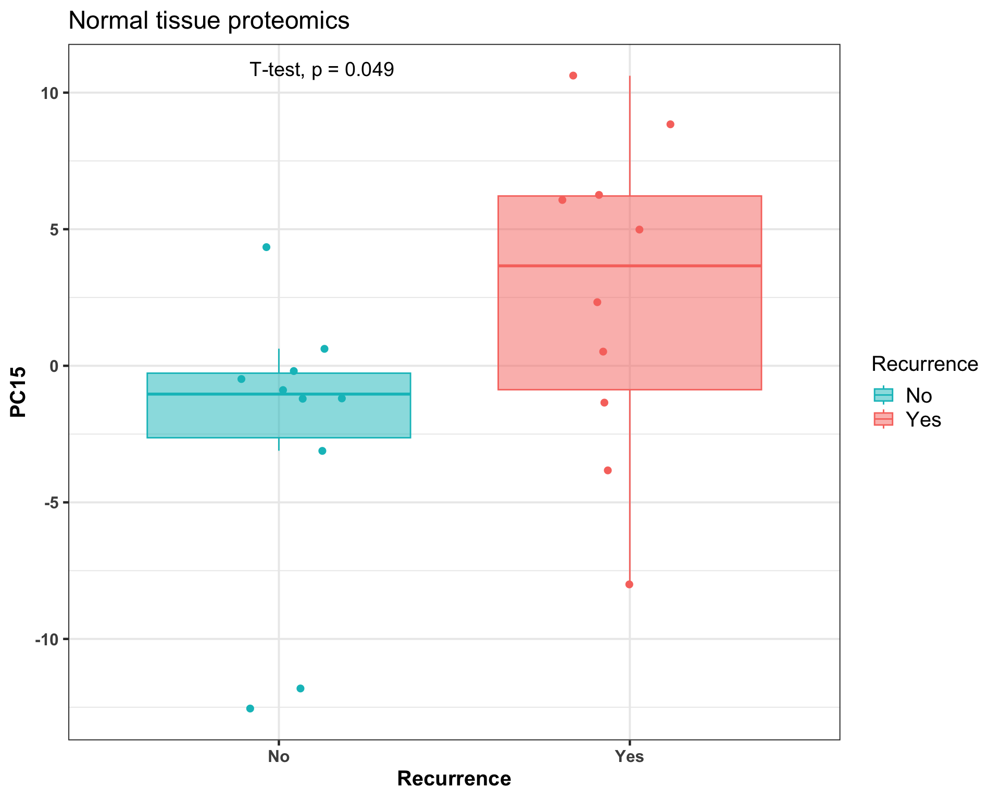

Single-omics analysis: Method development lung cancer patient cohort
Qian-Wu Liao
Last updated: 2023-04-25
Checks: 6 1
Knit directory:
SMART-CARE_LungCancer_MethodDev/
This reproducible R Markdown analysis was created with workflowr (version 1.7.0). The Checks tab describes the reproducibility checks that were applied when the results were created. The Past versions tab lists the development history.
Great! Since the R Markdown file has been committed to the Git repository, you know the exact version of the code that produced these results.
Great job! The global environment was empty. Objects defined in the global environment can affect the analysis in your R Markdown file in unknown ways. For reproduciblity it’s best to always run the code in an empty environment.
The command set.seed(20230425) was run prior to running
the code in the R Markdown file. Setting a seed ensures that any results
that rely on randomness, e.g. subsampling or permutations, are
reproducible.
Great job! Recording the operating system, R version, and package versions is critical for reproducibility.
Nice! There were no cached chunks for this analysis, so you can be confident that you successfully produced the results during this run.
Using absolute paths to the files within your workflowr project makes it difficult for you and others to run your code on a different machine. Change the absolute path(s) below to the suggested relative path(s) to make your code more reproducible.
| absolute | relative |
|---|---|
| /Users/qianwu/Desktop/SMART-CARE_LungCancer_MethodDev | . |
Great! You are using Git for version control. Tracking code development and connecting the code version to the results is critical for reproducibility.
The results in this page were generated with repository version dc86335. See the Past versions tab to see a history of the changes made to the R Markdown and HTML files.
Note that you need to be careful to ensure that all relevant files for
the analysis have been committed to Git prior to generating the results
(you can use wflow_publish or
wflow_git_commit). workflowr only checks the R Markdown
file, but you know if there are other scripts or data files that it
depends on. Below is the status of the Git repository when the results
were generated:
Ignored files:
Ignored: .DS_Store
Ignored: data/.DS_Store
Untracked files:
Untracked: code/feature_selection.Rmd
Untracked: code/misc.R
Untracked: code/mofa_downstream_analysis.Rmd
Untracked: code/mofa_factors_investigation.Rmd
Untracked: code/workflowr_commands.R
Untracked: data/AG_Hell/
Untracked: data/AG_Hopf/
Untracked: data/AG_Krijgsveld/
Untracked: data/corrMetaPlasmaRes_Hopf_Hell.rds
Untracked: data/corrMetaTissueRes_Hopf_Hell.rds
Untracked: data/mofa/
Note that any generated files, e.g. HTML, png, CSS, etc., are not included in this status report because it is ok for generated content to have uncommitted changes.
These are the previous versions of the repository in which changes were
made to the R Markdown
(analysis/preliminary_analysis_targeted_DDA.Rmd) and HTML
(docs/preliminary_analysis_targeted_DDA.html) files. If
you’ve configured a remote Git repository (see
?wflow_git_remote), click on the hyperlinks in the table
below to view the files as they were in that past version.
| File | Version | Author | Date | Message |
|---|---|---|---|---|
| Rmd | e54886f | LiaoQianWu | 2023-04-25 | Finalize scripts about data preprocessing, preliminary analysis, comparisons between targeted and untargeted |
Description: Conduct univariate (association test) and multivariate (PCA) analyses on individual datasets, Plasma and Tissue Targeted Metabolomics from AG Hell and DDA Proteomics from AG Krijgsveld, to take an initial look at power of each dataset in terms of predicting patient cancer recurrences and also potentially to provide evidence for latter multi-omics analyses. Association test between each feature (metabolite and protein level) and cancer recurrence was performed to capture significant features that can separate recurrence and non-recurrence patients. PCA was performed to see if there is any significant PC that can separate recurrence and non-recurrence patients.
Load libraries
library('SummarizedExperiment')
library('ggrepel')
library('ggfortify')
library('umap')
library('tidyverse')
# Load user-defined functions
source('./code/misc.R')Plasma Metabolomics
Based on PCA result obtained by analyzing whole Plasma Metabolomics dataset that includes Baseline and Follow-up samples, we found that PCA mainly captures source of variation in time points, the unwanted variation. Besides, we attempt to identify biomarkers that can predict whether patients WILL suffer from cancer recurrence or not. Therefore, we decided to analyze Baseline and Follow-up samples separately.
# Load normalized data
metaPlasmaNorm <- readRDS('./data/AG_Hell/metaPlasmaNorm.rds')
# Add time point information into data
timePoint <- as.data.frame(colData(metaPlasmaNorm)) %>%
dplyr::mutate(TimePoint = dplyr::case_when(
Condition == 'Baseline' ~ 'Baseline',
Condition != 'Baseline' ~ '2 years later')) %>%
dplyr::select(TimePoint)
colData(metaPlasmaNorm)['TimePoint'] <- timePoint
# Perform analysis
metaPlasmaRes <- SOA(metaPlasmaNorm, fac = c('Recurrence', 'TimePoint'))
tPCASigRes <- metaPlasmaRes$tPCASigRes
pcaRes <- metaPlasmaRes$pcaRes
pcTab <- metaPlasmaRes$pcTabDisplay associations between learned PCs (Var1) and factors (Var2). Basically t-test was performed to test significance of difference between two groups, e.g., recurrence and non-recurrence patient groups or baseline and follow-up sample groups.
# Display PCs of interest
tPCASigRes Var1 Var2 pVal tStats pValAdj
1 PC2 TimePoint 0.0004253577 3.861161 0.03402862
2 PC19 Recurrence 0.0142029245 -2.570343 0.56811698
3 PC25 Recurrence 0.0301048112 2.253121 0.77425112
4 PC14 Recurrence 0.0387125560 2.141439 0.77425112PC2 explains quite some variation in data and separates patient samples by time points.
# ggfortify
# ggplot2::autoplot(pcaRes, x = 1, y =2)
ggplot(pcTab, aes(x=PC1, y=PC2, col=TimePoint, shape=Recurrence,
group=Patient)) +
geom_point(size = 4) +
labs(x = 'PC1 (24.92%)', y = 'PC2 (16.79%)') +#, title = 'Plasma metabolomics') +
geom_line(col = 'grey50', linetype = 'dashed') +
scale_color_discrete(name = 'Time point',
labels = c('Baseline', '2 years later')) +
theme(axis.title = element_text(size = 16),
legend.title = element_text(size = 14), legend.text = element_text(size = 12))
# ggsave(paste0(result_path, 'AG_Hell/metaPlasma_pca.png'), device = 'png', dpi = 400)Display variance explained by each PC
# Display proportion of total variance captured by all PCs explained by each PC
varExplained <- pcaRes$sdev^2 / sum(pcaRes$sdev^2)
PC <- paste0('PC', seq(length(varExplained)))
varTab <- data.frame(PC = factor(PC, levels = PC),
Var_explained = varExplained)
ggplot(varTab, aes(x=PC, y=Var_explained*100)) +
geom_col() +
labs(x = '', y = 'Variance explained (%)',
title = 'Plasma metabolomics') +
theme(axis.text.x = element_text(angle = 90, hjust = 1, vjust = 0.5))
Baseline samples
Display significant associations between features (Var1) and cancer recurrence (Var2) and observe molecular signatures in input data through heatmap. Note that features in heatmap are ordered by their t-statistics.
# Subset baseline samples
smpBaseIdx <- which(colData(metaPlasmaNorm)$Condition == 'Baseline')
metaBase <- metaPlasmaNorm[, smpBaseIdx]
# Perform analysis
metaBaseRes <- SOA(metaBase, fac = 'Recurrence', num_feats = 30)
datMat <- metaBaseRes$data
smpAnno <- metaBaseRes$smpMetadata
tFeatSigRes <- metaBaseRes$tFeatSigRes
tPCASigRes <- metaBaseRes$tPCASigRes
pcaRes <- metaBaseRes$pcaRes
pcTab <- metaBaseRes$pcTab
pcTopFeatTab <- metaBaseRes$pcTopFeatTab
# Display features that can significantly separate recurrence and non-recurrence
# patients
tFeatSigRes Var1 Var2 pVal tStats pValAdj
1 PC aa C38:3 Recurrence 0.0007201606 4.069043 0.4537012
2 Cer(d18:2/24:1) Recurrence 0.0016097226 3.707999 0.4966786
3 SM C16:1 Recurrence 0.0025488234 3.501394 0.4966786
4 HexCer(d18:2/22:0) Recurrence 0.0031535147 3.405407 0.4966786
5 Cer(d18:2/16:0) Recurrence 0.0053083586 3.169330 0.5467464
6 DG(17:0_18:1) Recurrence 0.0091328623 -2.920441 0.5467464
7 PC ae C38:6 Recurrence 0.0095671995 2.898943 0.5467464
8 HexCer(d18:2/16:0) Recurrence 0.0115590861 2.811071 0.5467464
9 PC aa C38:0 Recurrence 0.0118884791 2.797964 0.5467464
10 CE(20:3) Recurrence 0.0121374450 2.788286 0.5467464
11 TG(17:2_34:3) Recurrence 0.0124539027 -2.776257 0.5467464
12 Hex3Cer(d18:1/16:0) Recurrence 0.0138162273 2.727609 0.5467464
13 PC ae C38:5 Recurrence 0.0141186063 2.717436 0.5467464
14 Hex2Cer(d18:1/18:0) Recurrence 0.0145373427 2.703688 0.5467464
15 PC ae C38:3 Recurrence 0.0149800428 2.689558 0.5467464
16 HexCer(d18:2/24:0) Recurrence 0.0154000158 2.676517 0.5467464
17 TG(18:3_32:0) Recurrence 0.0156132290 -2.670026 0.5467464
18 CE(20:4) Recurrence 0.0156213263 2.669781 0.5467464
19 PC ae C36:5 Recurrence 0.0167773136 2.636010 0.5563004
20 Hex3Cer(d18:1/18:0) Recurrence 0.0190402795 2.575862 0.5699582
21 DG(14:0_18:2) Recurrence 0.0193386957 -2.568443 0.5699582
22 Hex3Cer(d18:1/24:1) Recurrence 0.0199033020 2.554697 0.5699582
23 SM C20:2 Recurrence 0.0213468980 2.521160 0.5847194
24 SM C18:1 Recurrence 0.0238256891 2.468275 0.6254243
25 PC ae C36:4 Recurrence 0.0273018496 2.402226 0.6581983
26 PC ae C40:6 Recurrence 0.0277950031 2.393501 0.6581983
27 PC aa C36:0 Recurrence 0.0284706111 2.381781 0.6581983
28 SM C24:1 Recurrence 0.0320498986 2.323710 0.6581983
29 HexCer(d18:1/16:0) Recurrence 0.0341216251 2.292798 0.6581983
30 PC ae C32:2 Recurrence 0.0357260764 2.270032 0.6581983
31 PC ae C34:3 Recurrence 0.0371158048 2.251064 0.6581983
32 PC aa C36:3 Recurrence 0.0412007153 2.198877 0.6581983
33 PC aa C40:3 Recurrence 0.0413903625 2.196571 0.6581983
34 Cer(d18:1/26:1) Recurrence 0.0418151242 2.191443 0.6581983
35 DG-O(14:0_18:2) Recurrence 0.0430689871 -2.176577 0.6581983
36 PC ae C38:4 Recurrence 0.0451480392 2.152781 0.6581983
37 TG(17:2_38:7) Recurrence 0.0456641180 -2.147030 0.6581983
38 HexCer(d18:1/24:1) Recurrence 0.0456652972 2.147017 0.6581983
39 TG(16:0_40:6) Recurrence 0.0474132983 -2.127968 0.6581983
40 lysoPC a C26:1 Recurrence 0.0485546935 2.115872 0.6581983
41 PC aa C42:2 Recurrence 0.0497626614 2.103350 0.6581983
42 TG(16:0_38:5) Recurrence 0.0498163681 -2.102800 0.6581983# Plot molecular signatures in input data
# Order features according to t-statistics
featOrder <- dplyr::arrange(tFeatSigRes, dplyr::desc(tStats))$Var1
# Arrange samples to make same groups in same clusters
smpOrder <- c(which(smpAnno$Recurrence == 'No'),
which(smpAnno$Recurrence == 'Yes'))
# Prepare recurrence table for annotating samples in heatmap
smpRecur <- dplyr::select(smpAnno, Sample, Recurrence) %>%
tibble::column_to_rownames('Sample')
pheatmap::pheatmap(datMat[featOrder, smpOrder],
annotation_col = smpRecur,
color = colorRampPalette(c('navy', 'white', 'red'))(100),
cluster_rows = F, cluster_cols = F, show_rownames = T,
scale = 'row', #row scaling is across columns
main = 'Baseline plasma metabolomics')
Visualize data of top 6 significant features
# Visualize data of top 6 significant features
topSigFeats <- tFeatSigRes$Var1[1:6]
topSigFeatData <- tibble::as_tibble(datMat[topSigFeats,], rownames = 'Feature') %>%
tidyr::pivot_longer(cols = -'Feature',
names_to = 'Sample', values_to = 'Abundance') %>%
dplyr::mutate(Feature = factor(Feature, levels = topSigFeats)) %>%
dplyr::left_join(smpAnno, by = 'Sample')
ggplot(topSigFeatData, aes(x=Recurrence, y=Abundance, col=Recurrence, fill=Recurrence)) +
geom_boxplot(alpha = 0.5, outlier.shape = NA) +
geom_jitter(position = position_jitter(0.2), size = 2, show.legend = F) +
scale_color_manual(values=c('#00BFC4', '#F8766D')) +
scale_fill_manual(values=c('#00BFC4', '#F8766D')) +
facet_wrap(vars(Feature), scales = 'free') +
ggpubr::stat_compare_means(method = 't.test', paired = F,
method.args = list(var.equal = T),
show.legend = F)
Display significant associations between PCs (Var1) and cancer recurrence (Var2)
# Display PCs that can significantly separate recurrence and non-recurrence
# patients
tPCASigRes Var1 Var2 pVal tStats pValAdj
1 PC11 Recurrence 0.01306487 -2.753839 0.2612974
2 PC15 Recurrence 0.02757487 2.397378 0.2757487# Display proportion of total variance captured by all PCs explained by each PC
varExplained <- pcaRes$sdev^2 / sum(pcaRes$sdev^2)
PC <- paste0('PC', seq(length(varExplained)))
varTab <- data.frame(PC = factor(PC, levels = PC),
Var_explained = varExplained)
ggplot(varTab, aes(x=PC, y=Var_explained*100)) +
geom_col() +
labs(x = '', y = 'Variance explained (%)',
title = 'Baseline plasma metabolomics')
PC11 potentially separates recurrence and non-recurrence patients.
# ggfortify
# ggplot2::autoplot(pcaRes, x = 11, y = 15)
# PC11
# Visualize PCs
ggplot(pcTab, aes(x=Recurrence, y=PC11, col=Recurrence, fill=Recurrence)) +
geom_boxplot(alpha = 0.5, outlier.shape = NA) +
geom_jitter(position = position_jitter(0.2), size = 2, show.legend = F) +
# geom_text_repel(aes(label=Sample), size = 4, show.legend = F) +
labs(y = 'PC11 (2.74%)', title = 'Baseline plasma metabolomics') +
scale_color_manual(values=c('#00BFC4', '#F8766D')) +
scale_fill_manual(values=c('#00BFC4', '#F8766D')) +
ggpubr::stat_compare_means(method = 't.test', paired = F, size = 6,
method.args = list(var.equal = T), hjust = 0.65,
show.legend = F) +
theme(axis.title = element_text(size = 16),
legend.title = element_text(size = 14), legend.text = element_text(size = 12))
# ggsave(paste0(result_path, 'AG_Hell/metaPlasma_baseline_pca_pc11.png'), device = 'png', dpi = 400)Plot molecular signatures captured by PC11 in input data. We took a look at top 20 features with highest loadings and observed metabolite levels of these top features through heatmap. Note that features in heatmap are ordered by their loadings. There is no single feature that can decently hint if patients will suffer cancer recurrence or not, which means each of these top features contributes a bit to explaining variation between recurrence and non-recurrence patients.
# Plot molecular signatures in input data
# Extract top features with highest loadings
topFeats <- pcTopFeatTab$PC11$Feature[1:20]
# Order features by loadings
topFeatsIdx <- sapply(topFeats, function(feat) {which(rownames(datMat) == feat)})
a <- pheatmap::pheatmap(datMat[topFeatsIdx, smpOrder],
annotation_col = smpRecur,
color = colorRampPalette(c('navy', 'white', 'red'))(100),
cluster_rows = F, cluster_cols = F,
scale = 'row', main = 'Baseline plasma metabolomics - PC11')
# ggsave(paste0(result_path, 'AG_Hell/metaPlasma_baseline_heatmap_pc11.png'), a, device = 'png', dpi = 400)Display top features that build the PC11
# Display top features with highest loadings of PC of interest
pcTopFeatTab$PC11 Feature Loading
1 TrpBetaine 0.31571511
2 C16:2 0.23921161
3 C10 0.22381730
4 TG(16:1_30:1) 0.22333356
5 DG(21:0_22:6) 0.21131349
6 BABA 0.19295684
7 DG-O(14:0_18:2) 0.17870348
8 CE(22:1) 0.15349047
9 TG(16:1_28:0) 0.14001914
10 3-IAA 0.13908265
11 DG(18:1_18:4) 0.13559403
12 PC ae C30:1 0.12406184
13 3-Met-His 0.12133393
14 Anserine 0.11941510
15 DG-O(16:0_18:1) 0.11477589
16 DCA 0.09942035
17 DG(16:0_20:0) 0.09580647
18 DG(18:1_20:2) 0.09408512
19 TG(16:0_28:1) 0.08804546
20 C10:1 0.08465781
21 DG(14:1_18:1) 0.08292622
22 DG(14:1_20:2) 0.08256603
23 CE(22:2) 0.08197078
24 TG(16:1_32:1) 0.08052516
25 p-Cresol-SO4 0.07892452
26 Histamine 0.07727769
27 lysoPC a C18:2 0.07680191
28 DG(18:3_20:2) 0.07667813
29 TG(18:1_26:0) 0.07457925
30 DG(16:0_16:0) 0.07316404Another PC that significantly separates recurrence and non-recurrence patients
# PC15
# Visualize PCs
ggplot(pcTab, aes(x=Recurrence, y=PC15, col=Recurrence, fill=Recurrence)) +
geom_boxplot(alpha = 0.5, outlier.shape = NA) +
geom_jitter(position = position_jitter(0.2), size = 2, show.legend = F) +
# geom_text_repel(aes(label=Sample), size = 4, show.legend = F) +
labs(y = 'PC15 (1.71%)', title = 'Baseline plasma metabolomics') +
scale_color_manual(values=c('#00BFC4', '#F8766D')) +
scale_fill_manual(values=c('#00BFC4', '#F8766D')) +
ggpubr::stat_compare_means(method = 't.test', paired = F, size = 6,
method.args = list(var.equal = T), hjust = 0.65,
show.legend = F) +
theme(axis.title = element_text(size = 16),
legend.title = element_text(size = 14), legend.text = element_text(size = 12))
# ggsave(paste0(result_path, 'AG_Hell/metaPlasma_baseline_pca_pc15.png'), device = 'png', dpi = 400)
# Plot molecular signatures in input data
# Extract top features with highest loadings
topFeats <- pcTopFeatTab$PC15$Feature[1:20]
topFeatsIdx <- sapply(topFeats, function(feat) {which(rownames(datMat) == feat)})
a <- pheatmap::pheatmap(datMat[topFeatsIdx, smpOrder],
annotation_col = smpRecur,
color = colorRampPalette(c('navy', 'white', 'red'))(100),
cluster_rows = F, cluster_cols = F,
scale = 'row', main = 'Baseline plasma metabolomics - PC15')# ggsave(paste0(result_path, 'AG_Hell/metaPlasma_baseline_heatmap_pc15.png'), a, device = 'png', dpi = 400)
# Display top features with highest loadings of PC of interest
pcTopFeatTab$PC15 Feature Loading
1 PC ae C38:1 0.26532771
2 Cer(d18:0/26:1(OH)) 0.20624525
3 DG-O(14:0_18:2) 0.20269596
4 DG(14:1_20:2) 0.18904579
5 p-Cresol-SO4 0.17118411
6 TG(18:0_30:1) 0.14061407
7 ProBetaine 0.12548868
8 BABA 0.12426900
9 DiCA(12:0) 0.12167275
10 Cer(d18:0/18:0(OH)) 0.11993035
11 C16:2 0.11952563
12 GLCAS 0.11472230
13 CE(22:2) 0.11132655
14 DG(18:1_20:2) 0.10699226
15 DG(18:1_18:4) 0.10620186
16 C8 0.10573746
17 TG(20:1_26:1) 0.10549332
18 DG(14:0_18:2) 0.10385519
19 GUDCA 0.10103704
20 3-IPA 0.09715646
21 CE(22:1) 0.09606489
22 Cortisol 0.09449596
23 DG(18:1_18:3) 0.09154592
24 PC ae C30:1 0.09109571
25 HCys 0.09107372
26 Cer(d18:0/20:0) 0.08803444
27 GDCA 0.08728985
28 TG(17:0_32:1) 0.08447220
29 Putrescine 0.08414481
30 DG(18:2_20:0) 0.08142684Follow-up samples
Display significant associations between features (Var1) and cancer recurrence (Var2) and observe molecular signatures in input data through heatmap. Note that features in heatmap are ordered by their t-statistics.
# Subset follow-up samples
smpFoloIdx <- which(colData(metaPlasmaNorm)$Condition != 'Baseline')
metaFolo <- metaPlasmaNorm[, smpFoloIdx]
# Perform analysis
metaFoloRes <- SOA(metaFolo, fac = 'Recurrence', num_feats = 30)
datMat <- metaFoloRes$data
smpAnno <- metaFoloRes$smpMetadata
tFeatSigRes <- metaFoloRes$tFeatSigRes
tPCASigRes <- metaFoloRes$tPCASigRes
pcaRes <- metaFoloRes$pcaRes
# Display features that can significantly separate recurrence and non-recurrence
# patients
tFeatSigRes Var1 Var2 pVal tStats pValAdj
1 CE(18:0) Recurrence 0.004177071 3.278246 0.7418005
2 CE(16:0) Recurrence 0.004506150 3.243839 0.7418005
3 GABA Recurrence 0.006331961 3.088841 0.7418005
4 CE(18:3) Recurrence 0.006710129 3.062286 0.7418005
5 Putrescine Recurrence 0.011210911 2.825323 0.7418005
6 C18:1-OH Recurrence 0.014583130 -2.702207 0.7418005
7 Asp Recurrence 0.021263006 2.523050 0.7418005
8 CE(18:1) Recurrence 0.022178886 2.502792 0.7418005
9 lysoPC a C18:0 Recurrence 0.023623801 2.472384 0.7418005
10 CE(20:3) Recurrence 0.026772814 2.411750 0.7418005
11 DG(18:1_20:3) Recurrence 0.029590789 -2.362908 0.7418005
12 Lac Recurrence 0.032076076 2.323308 0.7418005
13 CE(17:0) Recurrence 0.033207972 2.306210 0.7418005
14 CE(14:1) Recurrence 0.033392588 2.303472 0.7418005
15 TG(22:4_34:2) Recurrence 0.034181504 -2.291931 0.7418005
16 TG(18:2_38:5) Recurrence 0.035047417 -2.279544 0.7418005
17 PC ae C40:1 Recurrence 0.038220988 2.236442 0.7418005
18 CE(14:0) Recurrence 0.039727675 2.217123 0.7418005
19 Taurine Recurrence 0.039948023 2.214354 0.7418005
20 TG(17:2_38:5) Recurrence 0.040444705 -2.208165 0.7418005
21 DiCA(14:0) Recurrence 0.041457564 -2.195757 0.7418005
22 C3-DC (C4-OH) Recurrence 0.044730899 -2.157474 0.7418005
23 C3-OH Recurrence 0.044730899 -2.157474 0.7418005
24 C4:1 Recurrence 0.044730899 -2.157474 0.7418005
25 C5-DC (C6-OH) Recurrence 0.044730899 -2.157474 0.7418005
26 C5-M-DC Recurrence 0.044730899 -2.157474 0.7418005
27 C5-OH (C3-DC-M) Recurrence 0.044730899 -2.157474 0.7418005
28 C5:1-DC Recurrence 0.044730899 -2.157474 0.7418005
29 C6:1 Recurrence 0.044730899 -2.157474 0.7418005
30 C7-DC Recurrence 0.044730899 -2.157474 0.7418005
31 C9 Recurrence 0.044730899 -2.157474 0.7418005
32 Ac-Orn Recurrence 0.044730899 -2.157474 0.7418005
33 c4-OH-Pro Recurrence 0.044730899 -2.157474 0.7418005
34 PEA Recurrence 0.044730899 -2.157474 0.7418005
35 CE(22:5) Recurrence 0.045999877 2.143320 0.7418005
36 TG(20:0_32:3) Recurrence 0.046440721 -2.138486 0.7418005
37 CE(20:4) Recurrence 0.046838060 2.134165 0.7418005
38 DG(18:1_18:3) Recurrence 0.047762464 -2.124240 0.7418005
39 C16-OH Recurrence 0.048662713 -2.114741 0.7418005
40 t4-OH-Pro Recurrence 0.049599541 2.105025 0.7418005
41 TG(22:5_34:2) Recurrence 0.049753984 -2.103439 0.7418005# Plot molecular signatures in input data
# Order features according to t-statistics
featOrder <- dplyr::arrange(tFeatSigRes, dplyr::desc(tStats))$Var1
# Arrange samples to make same groups in same clusters
smpOrder <- c(which(smpAnno$Recurrence == 'No'),
which(smpAnno$Recurrence == 'Yes'))
# Prepare recurrence table for annotating samples in heatmap
smpRecur <- dplyr::select(smpAnno, Sample, Recurrence) %>%
tibble::column_to_rownames('Sample')
pheatmap::pheatmap(datMat[featOrder, smpOrder],
annotation_col = smpRecur,
color = colorRampPalette(c('navy', 'white', 'red'))(100),
cluster_rows = F, cluster_cols = F, show_rownames = T,
scale = 'row', main = 'Follow-up plasma metabolomics')
Visualize data of top 6 significant features
# Visualize data of top 6 significant features
topSigFeats <- tFeatSigRes$Var1[1:6]
topSigFeatData <- tibble::as_tibble(datMat[topSigFeats,], rownames = 'Feature') %>%
tidyr::pivot_longer(cols = -'Feature',
names_to = 'Sample', values_to = 'Abundance') %>%
dplyr::mutate(Feature = factor(Feature, levels = topSigFeats)) %>%
dplyr::left_join(smpAnno, by = 'Sample')
ggplot(topSigFeatData, aes(x=Recurrence, y=Abundance, col=Recurrence, fill=Recurrence)) +
geom_boxplot(alpha = 0.5, outlier.shape = NA) +
geom_jitter(position = position_jitter(0.2), size = 2, show.legend = F) +
scale_color_manual(values=c('#00BFC4', '#F8766D')) +
scale_fill_manual(values=c('#00BFC4', '#F8766D')) +
facet_wrap(vars(Feature), scales = 'free') +
ggpubr::stat_compare_means(method = 't.test', paired = F,
method.args = list(var.equal = T),
show.legend = F)
Display significant associations between PCs (Var1) and cancer recurrence (Var2)
# Display PCs that can significantly separate recurrence and non-recurrence
# patients
tPCASigRes Var1 Var2 pVal tStats pValAdj
1 PC20 Recurrence 0.01607057 2.656383 0.3214114# Display proportion of total variance captured by all PCs explained by each PC
varExplained <- pcaRes$sdev^2 / sum(pcaRes$sdev^2)
PC <- paste0('PC', seq(length(varExplained)))
varTab <- data.frame(PC = factor(PC, levels = PC),
Var_explained = varExplained)
ggplot(varTab, aes(x=PC, y=Var_explained*100)) +
geom_col() +
labs(x = '', y = 'Variance explained (%)',
title = 'Follow-up plasma metabolomics')
Changes in time course
Differences between Follow-up and Baseline samples (Follow-up matrix
- baseline matrix):
Display significant associations between features (Var1) and cancer recurrence (Var2) and observe molecular signatures in input data through heatmap. Note that features in heatmap are ordered by their t-statistics.
# Subset baseline samples
smpBaseIdx <- which(colData(metaPlasmaNorm)$Condition == 'Baseline')
metaBase <- metaPlasmaNorm[, smpBaseIdx]
# Subset follow-up samples
smpFoloIdx <- which(colData(metaPlasmaNorm)$Condition != 'Baseline')
metaFolo <- metaPlasmaNorm[, smpFoloIdx]
# Modify sample names for matching two datasets
colnames(metaBase) <- stringr::str_remove(colnames(metaBase), '_P_B')
colnames(metaFolo) <- stringr::str_remove(colnames(metaFolo), '_P_R')
# Retrieve data matrix
metaBaseMat <- SummarizedExperiment::assay(metaBase)
metaFoloMat <- SummarizedExperiment::assay(metaFolo)
# Subtract follow-up matrix by baseline matrix
if (identical(colnames(metaBaseMat), colnames(metaFoloMat)) &
identical(rownames(metaBaseMat), rownames(metaFoloMat))) {
metaDiffMat <- metaFoloMat - metaBaseMat
} else {
print('Align samples or features first.')
}
# Retrieve samples metadata for creating SE object
colAnno <- dplyr::select(as.data.frame(colData(metaBase)), Patient, Recurrence)
metaDiff <- SummarizedExperiment(assays = metaDiffMat, colData = colAnno)
# Perform analysis
metaPlasmaDiffRes <- SOA(metaDiff, fac = 'Recurrence', num_feats = 30)
datMat <- metaPlasmaDiffRes$data
smpAnno <- metaPlasmaDiffRes$smpMetadata
tFeatSigRes <- metaPlasmaDiffRes$tFeatSigRes
tPCASigRes <- metaPlasmaDiffRes$tPCASigRes
pcaRes <- metaPlasmaDiffRes$pcaRes
pcTab <- metaPlasmaDiffRes$pcTab
pcTopFeatTab <- metaPlasmaDiffRes$pcTopFeatTab
# Display features that can significantly separate recurrence and non-recurrence
# patients
tFeatSigRes Var1 Var2 pVal tStats pValAdj
1 TrpBetaine Recurrence 0.005852856 3.124798 0.9982022
2 DG(17:0_18:1) Recurrence 0.009791578 2.888205 0.9982022
3 Cer(d18:1/26:1) Recurrence 0.009829049 -2.886435 0.9982022
4 Glu Recurrence 0.024507375 2.454639 0.9982022
5 SM C20:2 Recurrence 0.029262546 -2.368369 0.9982022
6 DG(18:1_20:3) Recurrence 0.029378316 -2.366436 0.9982022
7 TG(16:1_28:0) Recurrence 0.031362679 2.334374 0.9982022
8 CE(20:0) Recurrence 0.036638129 2.257508 0.9982022
9 DiCA(14:0) Recurrence 0.045920605 -2.144193 0.9982022
10 SM C22:3 Recurrence 0.047461881 -2.127448 0.9982022
11 TG(22:5_34:2) Recurrence 0.048476565 -2.116692 0.9982022# Plot molecular signatures in input data
# Order features according to t-statistics
featOrder <- dplyr::arrange(tFeatSigRes, dplyr::desc(tStats))$Var1
# Arrange samples to make same groups in same clusters
smpOrder <- c(which(smpAnno$Recurrence == 'No'),
which(smpAnno$Recurrence == 'Yes'))
# Prepare recurrence table for annotating samples in heatmap
smpRecur <- dplyr::select(smpAnno, Sample, Recurrence) %>%
tibble::column_to_rownames('Sample')
pheatmap::pheatmap(datMat[featOrder, smpOrder],
annotation_col = smpRecur,
color = colorRampPalette(c('navy', 'white', 'red'))(100),
cluster_rows = F, cluster_cols = F, show_rownames = T,
scale = 'row', main = 'Differential plasma metabolomics')
Visualize data of top 6 significant features
# Visualize data of top 6 significant features
topSigFeats <- tFeatSigRes$Var1[1:6]
topSigFeatData <- tibble::as_tibble(datMat[topSigFeats,], rownames = 'Feature') %>%
tidyr::pivot_longer(cols = -'Feature',
names_to = 'Sample', values_to = 'Abundance') %>%
dplyr::mutate(Feature = factor(Feature, levels = topSigFeats)) %>%
dplyr::left_join(smpAnno, by = 'Sample')
ggplot(topSigFeatData, aes(x=Recurrence, y=Abundance, col=Recurrence, fill=Recurrence)) +
geom_boxplot(alpha = 0.5, outlier.shape = NA) +
geom_jitter(position = position_jitter(0.2), size = 2, show.legend = F) +
scale_color_manual(values=c('#00BFC4', '#F8766D')) +
scale_fill_manual(values=c('#00BFC4', '#F8766D')) +
facet_wrap(vars(Feature), scales = 'free') +
ggpubr::stat_compare_means(method = 't.test', paired = F,
method.args = list(var.equal = T),
show.legend = F)
Display significant associations between PCs (Var1) and cancer recurrence (Var2)
# Display PCs that can significantly separate recurrence and non-recurrence
# patients
tPCASigRes Var1 Var2 pVal tStats pValAdj
1 PC17 Recurrence 0.006420724 3.082472 0.1284145# Display proportion of total variance captured by all PCs explained by each PC
varExplained <- pcaRes$sdev^2 / sum(pcaRes$sdev^2)
PC <- paste0('PC', seq(length(varExplained)))
varTab <- data.frame(PC = factor(PC, levels = PC),
Var_explained = varExplained)
ggplot(varTab, aes(x=PC, y=Var_explained*100)) +
geom_col() +
labs(x = '', y = 'Variance explained (%)',
title = 'Differential plasma metabolomics')
PC17 potentially separates recurrence and non-recurrence patients
# Visualize PCs
ggplot(pcTab, aes(x=Recurrence, y=PC17, col=Recurrence, fill=Recurrence)) +
geom_boxplot(alpha = 0.5, outlier.shape = NA) +
geom_jitter(position = position_jitter(0.2), size = 2, show.legend = F) +
labs(title = 'Differential plasma metabolomics') +
scale_color_manual(values=c('#00BFC4', '#F8766D')) +
scale_fill_manual(values=c('#00BFC4', '#F8766D')) +
ggpubr::stat_compare_means(method = 't.test', paired = F, size = 5,
method.args = list(var.equal = T),
show.legend = F)
Observe molecular signatures captured by PC17 in input data
# Plot molecular signatures in input data
# Extract top features with highest loadings
topFeats <- pcTopFeatTab$PC17$Feature[1:10]
topFeatsIdx <- sapply(topFeats, function(feat) {which(rownames(datMat) == feat)})
pheatmap::pheatmap(datMat[topFeatsIdx, smpOrder],
annotation_col = smpRecur,
color = colorRampPalette(c('navy', 'white', 'red'))(100),
cluster_rows = F, cluster_cols = F,
scale = 'row', main = 'Differential plasma metabolomics - PC17')
Display top features that build PC17
# Display top features with highest loadings of PC of interest
pcTopFeatTab$PC17
Feature Loading
1 TrpBetaine 0.26496491
2 DG-O(14:0_18:2) 0.19193164
3 Cer(d18:0/26:1(OH)) 0.18128634
4 TMAO 0.16050984
5 DG(14:0_18:2) 0.15776941
6 C6 (C4:1-DC) 0.14696768
7 DG(18:3_18:3) 0.14399381
8 C3:1 0.13954501
9 3-IAA 0.12530623
10 GUDCA 0.11234694
11 TG(18:1_26:0) 0.11173160
12 DG(14:1_20:2) 0.11113362
13 DG(18:2_18:4) 0.10913552
14 3-Met-His 0.10800454
15 TG(20:1_26:1) 0.10504138
16 TG(18:0_30:1) 0.09980933
17 PC ae C30:0 0.09935600
18 DCA 0.09881935
19 DG(16:0_20:0) 0.09699635
20 3-IPA 0.09665866
21 SM C22:3 0.09593664
22 Spermidine 0.09019993
23 Xanthine 0.09014675
24 Cer(d18:0/18:0(OH)) 0.08955950
25 PC aa C30:0 0.08911029
26 AA 0.08894807
27 Arg 0.08858777
28 C16 0.08239773
29 DG(16:1_18:0) 0.08094899
30 TG(18:1_28:1) 0.08058352Tissue Metabolomics
Based on PCA result obtained by analyzing whole Tissue Metabolomics dataset that includes Tumor and Normal samples, we found that PCA mainly captures source of variation in tissue conditions, which is not of direct interest. In addition, Recurrence-related significant PCs do not work that well, perhaps because Tumor and Normal samples are noise to each other. Therefore, we decided to analyze Tumor and Normal samples separately.
# Load normalized data
metaTissueNorm <- readRDS('./data/AG_Hell/metaTissueNorm.rds')
# Perform analysis
metaTissueRes <- SOA(metaTissueNorm, fac = c('Recurrence', 'Condition'))
tPCASigRes <- metaTissueRes$tPCASigRes
pcaRes <- metaTissueRes$pcaRes
pcTab <- metaTissueRes$pcTabDisplay associations between learned PCs (Var1) and factors (Var2). Basically t-test was performed to test significance of difference between two groups, e.g., recurrence and non-recurrence patient groups or tumor and normal sample groups.
# Display PCs of interest
tPCASigRes Var1 Var2 pVal tStats pValAdj
1 PC2 Condition 6.230140e-15 12.403252 4.984112e-13
2 PC14 Recurrence 3.105732e-02 2.239454 9.839768e-01
3 PC15 Recurrence 4.812859e-02 2.042081 9.839768e-01PC2 explains quite some variation in data and separates patient samples by tissue conditions.
ggplot(pcTab, aes(x=Condition, y=PC2, col=Condition, fill=Condition)) +
geom_boxplot(alpha = 0.5, outlier.shape = NA) +
geom_jitter(position = position_jitter(0.2), size = 2, show.legend = F) +
labs(title = 'Tissue metabolomics') +
ggpubr::stat_compare_means(method = 't.test', paired = F, size = 5,
method.args = list(var.equal = T),
show.legend = F)
# Display proportion of total variance captured by all PCs explained by each PC
varExplained <- pcaRes$sdev^2 / sum(pcaRes$sdev^2)
PC <- paste0('PC', seq(length(varExplained)))
varTab <- data.frame(PC = factor(PC, levels = PC),
Var_explained = varExplained)
ggplot(varTab, aes(x=PC, y=Var_explained*100)) +
geom_col() +
labs(x = '', y = 'Variance explained (%)', title = 'Tissue metabolomics') +
theme(axis.text.x = element_text(angle = 90, hjust = 1, vjust = 0.5))
Visualize recurrence-related significant PCs
ggplot(pcTab, aes(x=PC14, y=PC15, col=Recurrence, group=Patient)) +
geom_point(size = 3) +
labs(title = 'Tissue metabolomics') +
scale_color_manual(values=c('#00BFC4', '#F8766D')) +
geom_line(col = 'grey50', linetype = 'dashed')
ggplot(pcTab, aes(x=Recurrence, y=PC14, col=Recurrence, fill=Recurrence)) +
geom_boxplot(alpha = 0.5, outlier.shape = NA) +
geom_jitter(position = position_jitter(0.2), size = 2, show.legend = F) +
labs(title = 'Tissue metabolomics') +
scale_color_manual(values=c('#00BFC4', '#F8766D')) +
scale_fill_manual(values=c('#00BFC4', '#F8766D')) +
ggpubr::stat_compare_means(method = 't.test', paired = F, size = 5,
show.legend = F)
ggplot(pcTab, aes(x=Recurrence, y=PC15, col=Recurrence, fill=Recurrence)) +
geom_boxplot(alpha = 0.5, outlier.shape = NA) +
geom_jitter(position = position_jitter(0.2), size = 2, show.legend = F) +
labs(title = 'Tissue metabolomics') +
scale_color_manual(values=c('#00BFC4', '#F8766D')) +
scale_fill_manual(values=c('#00BFC4', '#F8766D')) +
ggpubr::stat_compare_means(method = 't.test', paired = F, size = 5,
method.args = list(var.equal = T),
show.legend = F)
Tumor Samples
Display significant associations between features (Var1) and cancer recurrence (Var2) and observe molecular signatures in input data through heatmap. Note that features in heatmap are ordered by their t-statistics.
# Subset tumor samples
smpTumorIdx <- which(colData(metaTissueNorm)$Condition == 'Tumor')
metaTumor <- metaTissueNorm[, smpTumorIdx]
# Perform analysis
metaTumorRes <- SOA(metaTumor, fac = 'Recurrence', num_feats = 30)
datMat <- metaTumorRes$data
smpAnno <- metaTumorRes$smpMetadata
tFeatSigRes <- metaTumorRes$tFeatSigRes
tPCASigRes <- metaTumorRes$tPCASigRes
pcaRes <- metaTumorRes$pcaRes
pcTab <- metaTumorRes$pcTab
pcTopFeatTab <- metaTumorRes$pcTopFeatTab
# Display features that can significantly separate recurrence and non-recurrence
# patients
tFeatSigRes Var1 Var2 pVal tStats pValAdj
1 DG(16:0_20:0) Recurrence 0.01135340 -2.819440 0.9965381
2 PC aa C36:6 Recurrence 0.01348571 -2.738975 0.9965381
3 C10:2 Recurrence 0.01916791 -2.572676 0.9965381
4 DG(22:1_22:2) Recurrence 0.02480119 -2.448872 0.9965381
5 TG(20:2_34:4) Recurrence 0.02772031 2.394813 0.9965381
6 Trigonelline Recurrence 0.03527285 -2.276365 0.9965381
7 FA(20:2) Recurrence 0.04087017 -2.202918 0.9965381
8 TG(22:1_32:5) Recurrence 0.04996148 -2.101315 0.9965381# Plot molecular signatures in input data
# Order features according to t-statistics
featOrder <- dplyr::arrange(tFeatSigRes, dplyr::desc(tStats))$Var1
# Arrange samples to make same groups in same clusters
smpOrder <- c(which(smpAnno$Recurrence == 'No'),
which(smpAnno$Recurrence == 'Yes'))
# Prepare recurrence table for annotating samples in heatmap
smpRecur <- dplyr::select(smpAnno, Sample, Recurrence) %>%
tibble::column_to_rownames('Sample')
a <- pheatmap::pheatmap(datMat[featOrder, smpOrder],
annotation_col = smpRecur,
color = colorRampPalette(c('navy', 'white', 'red'))(100),
cluster_rows = F, cluster_cols = F, show_rownames = T,
scale = 'row', main = 'Tumor Tissue metabolomics')
# ggsave(paste0(result_path, 'AG_Hell/metaTumor_sigFeats.png'), plot = a, device = 'png', dpi = 400,
# height = 8, width = 10)Visualize data of top 6 significant features
# Visualize data of top 6 significant features
topSigFeats <- tFeatSigRes$Var1[1:6]
topSigFeatData <- tibble::as_tibble(datMat[topSigFeats,], rownames = 'Feature') %>%
tidyr::pivot_longer(cols = -'Feature',
names_to = 'Sample', values_to = 'Abundance') %>%
dplyr::mutate(Feature = factor(Feature, levels = topSigFeats)) %>%
dplyr::left_join(smpAnno, by = 'Sample')
ggplot(topSigFeatData, aes(x=Recurrence, y=Abundance, col=Recurrence, fill=Recurrence)) +
geom_boxplot(alpha = 0.5, outlier.shape = NA) +
geom_jitter(position = position_jitter(0.2), size = 2, show.legend = F) +
scale_color_manual(values=c('#00BFC4', '#F8766D')) +
scale_fill_manual(values=c('#00BFC4', '#F8766D')) +
facet_wrap(vars(Feature), scales = 'free') +
ggpubr::stat_compare_means(method = 't.test', paired = F,
method.args = list(var.equal = T),
show.legend = F)
# ggsave(paste0(result_path, 'AG_Hell/metaTumor_topSigFeats.png'), device = 'png', dpi = 400,
# height = 8, width = 10)Display significant associations between PCs (Var1) and cancer recurrence (Var2)
# Display PCs that can significantly separate recurrence and non-recurrence
# patients
tPCASigRes Var1 Var2 pVal tStats pValAdj
1 PC16 Recurrence 0.003636829 3.340968 0.07273658# Display proportion of total variance captured by all PCs explained by each PC
varExplained <- pcaRes$sdev^2 / sum(pcaRes$sdev^2)
PC <- paste0('PC', seq(length(varExplained)))
varTab <- data.frame(PC = factor(PC, levels = PC),
Var_explained = varExplained)
ggplot(varTab, aes(x=PC, y=Var_explained*100)) +
geom_col() +
labs(x = '', y = 'Variance explained (%)',
title = 'Tumor tissue metabolomics')
PC16 potentially separates recurrence and non-recurrence patients.
# Visualize PCs
ggplot(pcTab, aes(x=Recurrence, y=PC16,
col=Recurrence, fill=Recurrence)) +
geom_boxplot(alpha = 0.5, outlier.shape = NA) +
geom_jitter(position = position_jitter(0.2), size = 2, show.legend = F) +
# geom_text_repel(aes(label=Sample), size = 4, show.legend = F) +
labs(title = 'Tumor tissue metabolomics') +
scale_color_manual(values=c('#00BFC4', '#F8766D')) +
scale_fill_manual(values=c('#00BFC4', '#F8766D')) +
ggpubr::stat_compare_means(method = 't.test', paired = F, size = 5,
method.args = list(var.equal = T),
show.legend = F) +
theme(axis.title = element_text(size = 16),
legend.title = element_text(size = 14), legend.text = element_text(size = 12))
# ggsave(paste0(result_path, 'AG_Hell/metaTumor_pca.png'), device = 'png', dpi = 400,
# height = 8, width = 10)Plot molecular signatures captured by PC16 in input data. We took a look at top 10 features with highest loadings and observed metabolite levels of these top features through heatmap. Note that features in heatmap are ordered by their loadings.
# Plot molecular signatures in input data
# Extract top features with highest loadings
topFeats <- pcTopFeatTab$PC16$Feature[1:10]
topFeatsIdx <- sapply(topFeats, function(feat) {which(rownames(datMat) == feat)})
pheatmap::pheatmap(datMat[topFeatsIdx, smpOrder],
annotation_col = smpRecur,
color = colorRampPalette(c('navy', 'white', 'red'))(100),
cluster_rows = F, cluster_cols = F,
scale = 'row', main = 'Tumor tissue metabolomics - PC16')
Display top features that build the PC16
# Display top features with highest loadings of PC of interest
pcTopFeatTab$PC16 Feature Loading
1 C5-DC (C6-OH) 0.17576864
2 C8 0.17119294
3 DG(14:0_18:2) 0.14638967
4 TG(22:4_32:2) 0.13666899
5 H1 0.13623707
6 DG-O(14:0_18:2) 0.13092075
7 DG(18:1_18:4) 0.13026247
8 PheAlaBetaine 0.12915979
9 Ind-SO4 0.12736437
10 PC aa C38:1 0.12439773
11 TG(17:1_32:1) 0.12209139
12 C3 0.10684408
13 TG(16:1_32:0) 0.10347525
14 Sarcosine 0.10302874
15 Cer(d16:1/18:0) 0.10273602
16 TG(20:2_34:4) 0.10252979
17 DG(18:3_20:2) 0.09813467
18 Cystine 0.09356867
19 Trigonelline 0.09260150
20 PC aa C36:6 0.09121386
21 EPA 0.09068423
22 PC ae C38:1 0.09060494
23 C10:2 0.08933812
24 DG(18:2_20:4) 0.08913299
25 TG(22:2_32:4) 0.08882532
26 TG(22:3_30:2) 0.08820029
27 DG(18:3_18:3) 0.08813895
28 Met-SO 0.08609561
29 Cer(d18:1/18:0(OH)) 0.08517335
30 Betaine 0.08510355Normal samples
Display significant associations between features (Var1) and cancer recurrence (Var2) and observe molecular signatures in input data through heatmap. Note that features in heatmap are ordered by their t-statistics.
# Subset normal samples
smpNormalIdx <- which(colData(metaTissueNorm)$Condition == 'Normal')
metaNormal <- metaTissueNorm[, smpNormalIdx]
# Perform analysis
metaNormalRes <- SOA(metaNormal, fac = 'Recurrence', num_feats = 30)
datMat <- metaNormalRes$data
smpAnno <- metaNormalRes$smpMetadata
tFeatSigRes <- metaNormalRes$tFeatSigRes
tPCASigRes <- metaNormalRes$tPCASigRes
pcaRes <- metaNormalRes$pcaRes
pcTab <- metaNormalRes$pcTab
pcTopFeatTab <- metaNormalRes$pcTopFeatTab
# Display features that can significantly separate recurrence and non-recurrence
# patients
tFeatSigRes Var1 Var2 pVal tStats pValAdj
1 TG(16:0_38:7) Recurrence 0.02651824 2.416396 0.9980679
2 CE(22:1) Recurrence 0.03336133 -2.303935 0.9980679
3 Cer(d18:0/26:1(OH)) Recurrence 0.03400280 -2.294523 0.9980679
4 TG(20:2_34:4) Recurrence 0.04013662 2.211996 0.9980679
5 TG(17:2_38:5) Recurrence 0.04020299 2.211168 0.9980679# Plot molecular signatures in input data
# Order features according to t-statistics
featOrder <- dplyr::arrange(tFeatSigRes, dplyr::desc(tStats))$Var1
# Arrange samples to make same groups in same clusters
smpOrder <- c(which(smpAnno$Recurrence == 'No'),
which(smpAnno$Recurrence == 'Yes'))
# Prepare recurrence table for annotating samples in heatmap
smpRecur <- dplyr::select(smpAnno, Sample, Recurrence) %>%
tibble::column_to_rownames('Sample')
pheatmap::pheatmap(datMat[featOrder, smpOrder],
annotation_col = smpRecur,
color = colorRampPalette(c('navy', 'white', 'red'))(100),
cluster_rows = F, cluster_cols = F, show_rownames = T,
scale = 'row', main = 'Normal tissue metabolomics')
Visualize data of those 5 significant features
# Visualize data of those 5 significant features
topSigFeats <- tFeatSigRes$Var1[1:5]
topSigFeatData <- tibble::as_tibble(datMat[topSigFeats,], rownames = 'Feature') %>%
tidyr::pivot_longer(cols = -'Feature',
names_to = 'Sample', values_to = 'Abundance') %>%
dplyr::mutate(Feature = factor(Feature, levels = topSigFeats)) %>%
dplyr::left_join(smpAnno, by = 'Sample')
ggplot(topSigFeatData, aes(x=Recurrence, y=Abundance, col=Recurrence, fill=Recurrence)) +
geom_boxplot(alpha = 0.5, outlier.shape = NA) +
geom_jitter(position = position_jitter(0.2), size = 2, show.legend = F) +
scale_color_manual(values=c('#00BFC4', '#F8766D')) +
scale_fill_manual(values=c('#00BFC4', '#F8766D')) +
facet_wrap(vars(Feature), scales = 'free') +
ggpubr::stat_compare_means(method = 't.test', paired = F,
method.args = list(var.equal = T),
show.legend = F)
Display significant associations between PCs (Var1) and cancer recurrence (Var2)
# Display PCs that can significantly separate recurrence and non-recurrence
# patients
tPCASigRes Var1 Var2 pVal tStats pValAdj
1 PC6 Recurrence 0.02632357 2.419978 0.32828
2 PC17 Recurrence 0.04835676 -2.117951 0.32828
3 PC9 Recurrence 0.04924200 2.108713 0.32828# Display proportion of total variance captured by all PCs explained by each PC
varExplained <- pcaRes$sdev^2 / sum(pcaRes$sdev^2)
PC <- paste0('PC', seq(length(varExplained)))
varTab <- data.frame(PC = factor(PC, levels = PC),
Var_explained = varExplained)
ggplot(varTab, aes(x=PC, y=Var_explained*100)) +
geom_col() +
labs(x = '', y = 'Variance explained (%)',
title = 'Normal tissue metabolomics')
PC6 potentially separates recurrence and non-recurrence patients.
# PC6
# Visualize PCs
ggplot(pcTab, aes(x=Recurrence, y=PC6, col=Recurrence, fill=Recurrence)) +
geom_boxplot(alpha = 0.5, outlier.shape = NA) +
geom_jitter(position = position_jitter(0.2), size = 2, show.legend = F) +
# geom_text_repel(aes(label=Sample), size = 4, show.legend = F) +
labs(title = 'Normal tissue metabolomics') +
scale_color_manual(values=c('#00BFC4', '#F8766D')) +
scale_fill_manual(values=c('#00BFC4', '#F8766D')) +
ggpubr::stat_compare_means(method = 't.test', paired = F, size = 5,
method.args = list(var.equal = T),
show.legend = F)
Plot molecular signatures captured by PC6 in input data. We took a look at top 10 features with highest loadings and observed metabolite levels of these top features through heatmap. Note that features in heatmap are ordered by their loadings.
# Plot molecular signatures in input data
# Extract top features with highest loadings
topFeats <- pcTopFeatTab$PC6$Feature[1:10]
topFeatsIdx <- sapply(topFeats, function(feat) {which(rownames(datMat) == feat)})
pheatmap::pheatmap(datMat[topFeatsIdx, smpOrder],
annotation_col = smpRecur,
color = colorRampPalette(c('navy', 'white', 'red'))(100),
cluster_rows = F, cluster_cols = F,
scale = 'row', main = 'Normal tissue metabolomics - PC6')
Display top features that build the PC6
# Display top features with highest loadings of PC of interest
pcTopFeatTab$PC6 Feature Loading
1 PC aa C38:1 0.32681258
2 DG(18:2_18:3) 0.20170272
3 CE(15:1) 0.17173986
4 TG(17:0_32:1) 0.15380244
5 SM C20:2 0.15127238
6 TrpBetaine 0.14937592
7 TG(16:1_32:2) 0.14430760
8 C6:1 0.14368914
9 DG(14:0_18:2) 0.13796377
10 TG(20:1_32:2) 0.12544473
11 CE(17:0) 0.12337600
12 TG(22:6_34:3) 0.12032874
13 TG(18:0_30:1) 0.11270662
14 TG(18:0_30:0) 0.11230472
15 p-Cresol-SO4 0.10638822
16 CE(15:0) 0.10492220
17 TG(18:1_28:1) 0.10434993
18 Cystine 0.10379734
19 TG(16:1_32:0) 0.10148778
20 TG(22:6_32:1) 0.10047916
21 TG(16:0_30:2) 0.09843615
22 C5-OH (C3-DC-M) 0.09653183
23 TG(17:1_34:3) 0.09181125
24 DG(17:0_17:1) 0.08930373
25 TG(16:0_33:1) 0.08845397
26 Cortisol 0.08554376
27 TG(18:2_28:0) 0.08534346
28 3-IPA 0.08342139
29 C8 0.08258961
30 TG(18:1_30:2) 0.08244218Other PCs that significantly separate recurrence and non-recurrence patients
# PC17
# Visualize PCs
ggplot(pcTab, aes(x=Recurrence, y=PC17, col=Recurrence, fill=Recurrence)) +
geom_boxplot(alpha = 0.5, outlier.shape = NA) +
geom_jitter(position = position_jitter(0.2), size = 2, show.legend = F) +
# geom_text_repel(aes(label=Sample), size = 4, show.legend = F) +
labs(title = 'Normal tissue metabolomics') +
scale_color_manual(values=c('#00BFC4', '#F8766D')) +
scale_fill_manual(values=c('#00BFC4', '#F8766D')) +
ggpubr::stat_compare_means(method = 't.test', paired = F, size = 5,
method.args = list(var.equal = T),
show.legend = F)
# Plot molecular signatures in input data
# Extract top features with highest loadings
topFeats <- pcTopFeatTab$PC17$Feature[1:10]
topFeatsIdx <- sapply(topFeats, function(feat) {which(rownames(datMat) == feat)})
pheatmap::pheatmap(datMat[topFeatsIdx, smpOrder],
annotation_col = smpRecur,
color = colorRampPalette(c('navy', 'white', 'red'))(100),
cluster_rows = F, cluster_cols = F,
scale = 'row', main = 'Normal tissue metabolomics - PC17')
# Display top features with highest loadings of PC of interest
pcTopFeatTab$PC17 Feature Loading
1 TMAO 0.23916907
2 DG-O(14:0_18:2) 0.20759778
3 DG(14:1_20:2) 0.14916716
4 3-Met-His 0.14155043
5 TG(14:0_35:1) 0.13893971
6 C7-DC 0.13303423
7 TG(20:4_33:2) 0.12991926
8 TG(16:0_28:1) 0.12556706
9 TG(14:0_35:2) 0.12352031
10 DG(17:0_17:1) 0.12176182
11 GCDCA 0.12035415
12 TG(17:1_32:1) 0.11451120
13 TCDCA 0.10899239
14 CE(14:1) 0.10776297
15 CE(17:0) 0.10553742
16 TG(18:0_30:0) 0.10354589
17 DG(14:0_18:2) 0.10187874
18 PheAlaBetaine 0.10132279
19 TG(16:0_32:3) 0.10099020
20 TG(17:0_34:2) 0.09987857
21 Cer(d18:0/26:1(OH)) 0.09730541
22 DG(18:2_18:3) 0.09680057
23 C14:2-OH 0.09583187
24 DG(18:2_20:0) 0.09495797
25 TG(18:0_32:0) 0.09460269
26 CE(15:0) 0.09380702
27 DG(14:1_18:1) 0.09344213
28 TG(20:3_36:4) 0.09213046
29 TG(18:2_36:4) 0.09203900
30 DG(18:3_20:2) 0.09089090# PC9
# Visualize PCs
ggplot(pcTab, aes(x=Recurrence, y=PC9, col=Recurrence, fill=Recurrence)) +
geom_boxplot(alpha = 0.5, outlier.shape = NA) +
geom_jitter(position = position_jitter(0.2), size = 2, show.legend = F) +
# geom_text_repel(aes(label=Sample), size = 4, show.legend = F) +
labs(title = 'Normal tissue metabolomics') +
scale_color_manual(values=c('#00BFC4', '#F8766D')) +
scale_fill_manual(values=c('#00BFC4', '#F8766D')) +
ggpubr::stat_compare_means(method = 't.test', paired = F, size = 5,
method.args = list(var.equal = T),
show.legend = F)
Difference in tissue conditions
Tumor matrix - Normal matrix
Display significant associations between features (Var1) and cancer recurrence (Var2) and observe molecular signatures in input data through heatmap. Note that features in heatmap are ordered by their t-statistics.
# Subset Tumor samples
smpTumorIdx <- which(colData(metaTissueNorm)$Condition == 'Tumor')
metaTumor <- metaTissueNorm[, smpTumorIdx]
# Subset Normal samples
smpNormalIdx <- which(colData(metaTissueNorm)$Condition == 'Normal')
metaNormal <- metaTissueNorm[, smpNormalIdx]
# Modify sample names for matching two datasets
colnames(metaTumor) <- stringr::str_remove(colnames(metaTumor), '_TG')
colnames(metaNormal) <- stringr::str_remove(colnames(metaNormal), '_NG')
# Retrieve data matrix
metaTumorMat <- SummarizedExperiment::assay(metaTumor)
metaNormalMat <- SummarizedExperiment::assay(metaNormal)
# Subtract follow-up matrix by baseline matrix
if (identical(colnames(metaTumorMat), colnames(metaNormalMat)) &
identical(rownames(metaTumorMat), rownames(metaNormalMat))) {
metaDiffMat <- metaTumorMat - metaNormalMat
} else {
print('Align samples or features first.')
}
# Retrieve samples metadata for creating SE object
colAnno <- dplyr::select(as.data.frame(colData(metaTumor)), Patient, Recurrence)
rowAnno <- as.data.frame(rowData(metaTumor))
metaDiff <- SummarizedExperiment(assays = metaDiffMat, colData = colAnno,
rowData = rowAnno)
# Perform analysis
metaTissueDiffRes <- SOA(metaDiff, fac = 'Recurrence', num_feats = 30)
datMat <- metaTissueDiffRes$data
smpAnno <- metaTissueDiffRes$smpMetadata
tFeatSigRes <- metaTissueDiffRes$tFeatSigRes
tPCASigRes <- metaTissueDiffRes$tPCASigRes
pcaRes <- metaTissueDiffRes$pcaRes
pcTab <- metaTissueDiffRes$pcTab
pcTopFeatTab <- metaTissueDiffRes$pcTopFeatTab
# Display features that can significantly separate recurrence and non-recurrence
# patients
tFeatSigRes Var1 Var2 pVal tStats pValAdj
1 TG(17:1_34:3) Recurrence 0.02193754 -2.508053 0.9985946
2 TG(18:3_33:2) Recurrence 0.03407754 -2.293438 0.9985946
3 Trigonelline Recurrence 0.03518887 -2.277547 0.9985946
4 HexCer(d18:2/18:0) Recurrence 0.04591905 2.144211 0.9985946# Plot molecular signatures in input data
# Order features according to t-statistics
featOrder <- dplyr::arrange(tFeatSigRes, dplyr::desc(tStats))$Var1
# Arrange samples to make same groups in same clusters
smpOrder <- c(which(smpAnno$Recurrence == 'No'),
which(smpAnno$Recurrence == 'Yes'))
# Prepare recurrence table for annotating samples in heatmap
smpRecur <- dplyr::select(smpAnno, Sample, Recurrence) %>%
tibble::column_to_rownames('Sample')
pheatmap::pheatmap(datMat[featOrder, smpOrder],
annotation_col = smpRecur,
color = colorRampPalette(c('navy', 'white', 'red'))(100),
cluster_rows = F, cluster_cols = F, show_rownames = T,
scale = 'row', main = 'Differential tissue metabolomics')
Visualize data of those 4 significant features
# Visualize data of those 4 significant features
topSigFeats <- tFeatSigRes$Var1[1:4]
topSigFeatData <- tibble::as_tibble(datMat[topSigFeats,], rownames = 'Feature') %>%
tidyr::pivot_longer(cols = -'Feature',
names_to = 'Sample', values_to = 'Abundance') %>%
dplyr::mutate(Feature = factor(Feature, levels = topSigFeats)) %>%
dplyr::left_join(smpAnno, by = 'Sample')
ggplot(topSigFeatData, aes(x=Recurrence, y=Abundance, col=Recurrence, fill=Recurrence)) +
geom_boxplot(alpha = 0.5, outlier.shape = NA) +
geom_jitter(position = position_jitter(0.2), size = 2, show.legend = F) +
scale_color_manual(values=c('#00BFC4', '#F8766D')) +
scale_fill_manual(values=c('#00BFC4', '#F8766D')) +
facet_wrap(vars(Feature), scales = 'free') +
ggpubr::stat_compare_means(method = 't.test', paired = F,
method.args = list(var.equal = T),
show.legend = F)
Display significant associations between PCs (Var1) and cancer recurrence (Var2)
# Display PCs that can significantly separate recurrence and non-recurrence
# patients
tPCASigRes Var1 Var2 pVal tStats pValAdj
1 PC18 Recurrence 0.001682469 -3.688153 0.03364938# Display proportion of total variance captured by all PCs explained by each PC
varExplained <- pcaRes$sdev^2 / sum(pcaRes$sdev^2)
PC <- paste0('PC', seq(length(varExplained)))
varTab <- data.frame(PC = factor(PC, levels = PC),
Var_explained = varExplained)
ggplot(varTab, aes(x=PC, y=Var_explained*100)) +
geom_col() +
labs(x = '', y = 'Variance explained (%)',
title = 'Differential tissue metabolomics')
PC18 potentially separates recurrence and non-recurrence patients.
# Visualize PCs
ggplot(pcTab, aes(x=Recurrence, y=PC18, col=Recurrence, fill=Recurrence)) +
geom_boxplot(alpha = 0.5, outlier.shape = NA) +
geom_jitter(position = position_jitter(0.2), size = 2, show.legend = F) +
# geom_text_repel(aes(label=Sample), size = 4, show.legend = F) +
labs(title = 'Differential tissue metabolomics') +
scale_color_manual(values=c('#00BFC4', '#F8766D')) +
scale_fill_manual(values=c('#00BFC4', '#F8766D')) +
ggpubr::stat_compare_means(method = 't.test', paired = F, size = 5,
method.args = list(var.equal = T),
show.legend = F)
Plot molecular signatures captured by PC18 in input data. We took a look at top 10 features with highest loadings and observed metabolite levels of these top features through heatmap. Note that features in heatmap are ordered by their loadings.
# Plot molecular signatures in input data
# Extract top features with highest loadings
topFeats <- pcTopFeatTab$PC18$Feature[1:10]
topFeatsIdx <- sapply(topFeats, function(feat) {which(rownames(datMat) == feat)})
pheatmap::pheatmap(datMat[topFeatsIdx, smpOrder],
annotation_col = smpRecur,
color = colorRampPalette(c('navy', 'white', 'red'))(100),
cluster_rows = F, cluster_cols = F,
scale = 'row', main = 'Differential tissue metabolomics - PC18')
Display top features that build the PC18
# Display top features with highest loadings of PC of interest
pcTopFeatTab$PC18 Feature Loading
1 DG(18:3_20:2) 0.17178633
2 TG(20:0_34:1) 0.15135434
3 TG(17:1_34:3) 0.14602954
4 TG(20:1_32:2) 0.14132305
5 C7-DC 0.14049054
6 CE(22:0) 0.12455991
7 C5 0.12405169
8 DG-O(16:0_18:1) 0.12267827
9 DG(18:2_20:4) 0.12126161
10 TG(20:1_24:3) 0.11896515
11 TG(20:4_30:0) 0.11618423
12 CE(22:1) 0.11491964
13 C3 0.11479263
14 DG(18:2_18:3) 0.11303949
15 TG(17:2_38:6) 0.11182758
16 TG(16:1_33:1) 0.11167675
17 PC aa C38:1 0.11101286
18 TG(18:3_35:2) 0.11040101
19 C8 0.10839350
20 DG(14:0_18:2) 0.10803467
21 TG(18:0_30:1) 0.10761459
22 Cer(d18:0/26:1(OH)) 0.10545415
23 CE(15:0) 0.10370992
24 DG(14:1_18:1) 0.10222252
25 TG(16:0_36:6) 0.10078920
26 TG(16:0_28:2) 0.09584659
27 DG(18:2_20:0) 0.09394034
28 C10 0.09263741
29 DG(18:3_18:3) 0.09257864
30 C10:2 0.09253717Plasma Proteomics
As described in Plasma Metabolomics section, we analyzed Baseline and Follow-up samples separately.
# Load normalized data
proPlasmaNorm <- readRDS('./data/AG_Krijgsveld/proPlasmaNorm.rds')
colnames(proPlasmaNorm) <- colData(proPlasmaNorm)$Sample
# Add time point information into data
timePoint <- as.data.frame(colData(proPlasmaNorm)) %>%
dplyr::mutate(TimePoint = dplyr::case_when(
Condition == 'Baseline' ~ 'Baseline',
Condition != 'Baseline' ~ '2 years later')) %>%
dplyr::select(TimePoint)
colData(proPlasmaNorm)['TimePoint'] <- timePoint
# Perform analysis
proPlasmaRes <- SOA(proPlasmaNorm, fac = c('Recurrence', 'TimePoint'))
tPCASigRes <- proPlasmaRes$tPCASigRes
pcaRes <- proPlasmaRes$pcaRes
pcTab <- proPlasmaRes$pcTab
# Display PCs of interest
tPCASigRes Var1 Var2 pVal tStats pValAdj
1 PC26 TimePoint 0.005765987 -2.926021 0.3810590
2 PC14 Recurrence 0.009526475 2.730785 0.3810590
3 PC27 TimePoint 0.021168120 2.404632 0.5644832
4 PC18 Recurrence 0.036712606 -2.165259 0.6813483
5 PC10 Recurrence 0.042584266 2.098259 0.6813483ggplot(pcTab, aes(x=PC26, y=PC27, col=TimePoint, shape=Recurrence, group=Patient)) +
geom_point(size = 3) +
labs(title = 'Plasma proteomics') +
geom_line(col = 'grey50', linetype = 'dashed') +
scale_color_discrete(name = 'Time point',
labels = c('Baseline', '2 years later'))
ggplot(pcTab, aes(x=Recurrence, y=PC14, col=Recurrence, fill=Recurrence)) +
geom_boxplot(alpha = 0.5, outlier.shape = NA) +
geom_jitter(position = position_jitter(0.2), size = 2, show.legend = F) +
labs(title = 'Plasma proteomics') +
scale_color_manual(values=c('#00BFC4', '#F8766D')) +
scale_fill_manual(values=c('#00BFC4', '#F8766D')) +
ggpubr::stat_compare_means(method = 't.test', paired = F, size = 5,
method.args = list(var.equal = T),
show.legend = F)
# Display proportion of total variance captured by all PCs explained by each PC
varExplained <- pcaRes$sdev^2 / sum(pcaRes$sdev^2)
PC <- paste0('PC', seq(length(varExplained)))
varTab <- data.frame(PC = factor(PC, levels = PC),
Var_explained = varExplained)
ggplot(varTab, aes(x=PC, y=Var_explained*100)) +
geom_col() +
labs(x = '', y = 'Variance explained (%)', title = 'Plasma proteomics') +
theme(axis.text.x = element_text(angle = 90, hjust = 1, vjust = 0.5))
Baseline samples
Display significant associations between features (Var1) and cancer recurrence (Var2) and observe molecular signatures in input data through heatmap. Note that features in heatmap are ordered by their t-statistics.
# Subset baseline samples
smpBaseIdx <- which(colData(proPlasmaNorm)$Condition == 'Baseline')
proBase <- proPlasmaNorm[, smpBaseIdx]
# Perform analysis
proBaseRes <- SOA(proBase, fac = 'Recurrence', num_feats = 30)
datMat <- proBaseRes$data
smpAnno <- proBaseRes$smpMetadata
tFeatSigRes <- proBaseRes$tFeatSigRes
tPCASigRes <- proBaseRes$tPCASigRes
pcaRes <- proBaseRes$pcaRes
pcTab <- proBaseRes$pcTab
pcTopFeatTab <- proBaseRes$pcTopFeatTab
# Display features that can significantly separate recurrence and non-recurrence
# patients
tFeatSigRes Var1 Var2 pVal tStats pValAdj
1 A0A0G2JMI3 Recurrence 0.0004156624 4.316448 0.1543875
2 Q08380 Recurrence 0.0007098277 -4.075537 0.1543875
3 P01833 Recurrence 0.0012217736 -3.831763 0.1771572
4 A0A0B4J1U3 Recurrence 0.0021974424 3.568155 0.2389719
5 A0A0C4DH31 Recurrence 0.0030166864 3.425428 0.2624517
6 P22626 Recurrence 0.0062404968 3.095496 0.4524360
7 P06331 Recurrence 0.0136729002 -2.732505 0.7428023
8 P0C0L5 Recurrence 0.0157309338 2.666479 0.7428023
9 P60174 Recurrence 0.0168467259 2.634053 0.7428023
10 A0A075B6Q5 Recurrence 0.0212719174 -2.522849 0.7428023
11 A0A0B4J2H0 Recurrence 0.0231713291 2.481713 0.7428023
12 O00391 Recurrence 0.0235655228 -2.473576 0.7428023
13 P10809 Recurrence 0.0238210599 2.468369 0.7428023
14 Q96PD5 Recurrence 0.0244083903 -2.456597 0.7428023
15 P08865 Recurrence 0.0291423003 2.370383 0.7428023
16 P08727 Recurrence 0.0292038163 2.369352 0.7428023
17 P0DP01 Recurrence 0.0363504725 2.261427 0.7428023
18 P06748 Recurrence 0.0393574879 2.221806 0.7428023
19 P02745 Recurrence 0.0405436993 -2.206940 0.7428023
20 P62805 Recurrence 0.0408002947 2.203776 0.7428023
21 P02746 Recurrence 0.0415452657 -2.194695 0.7428023
22 Q8N257 Recurrence 0.0436647940 2.169652 0.7428023
23 P35030 Recurrence 0.0437199457 2.169016 0.7428023
24 P40197 Recurrence 0.0450651657 -2.153710 0.7428023
25 P0DMV8;P0DMV9 Recurrence 0.0479326679 2.122431 0.7428023
26 P01764 Recurrence 0.0479792654 2.121937 0.7428023
27 P04792 Recurrence 0.0499458355 2.101475 0.7428023# Plot molecular signatures in input data
# Order features according to t-statistics
featOrder <- dplyr::arrange(tFeatSigRes, dplyr::desc(tStats))$Var1
# Arrange samples to make same groups in same clusters
smpOrder <- c(which(smpAnno$Recurrence == 'No'),
which(smpAnno$Recurrence == 'Yes'))
# Prepare recurrence table for annotating samples in heatmap
smpRecur <- dplyr::select(smpAnno, Sample, Recurrence) %>%
tibble::column_to_rownames('Sample')
pheatmap::pheatmap(datMat[featOrder, smpOrder],
annotation_col = smpRecur,
color = colorRampPalette(c('navy', 'white', 'red'))(100),
cluster_rows = F, cluster_cols = F, show_rownames = T,
scale = 'row', main = 'Baseline plasma proteomics')
# Visualize data of top 6 significant features
topSigFeats <- tFeatSigRes$Var1[1:6]
topSigFeatData <- tibble::as_tibble(datMat[topSigFeats,], rownames = 'Feature') %>%
tidyr::pivot_longer(cols = -'Feature',
names_to = 'Sample', values_to = 'Abundance') %>%
dplyr::mutate(Feature = factor(Feature, levels = topSigFeats)) %>%
dplyr::left_join(smpAnno, by = 'Sample')
ggplot(topSigFeatData, aes(x=Recurrence, y=Abundance, col=Recurrence, fill=Recurrence)) +
geom_boxplot(alpha = 0.5, outlier.shape = NA) +
geom_jitter(position = position_jitter(0.2), size = 2, show.legend = F) +
scale_color_manual(values=c('#00BFC4', '#F8766D')) +
scale_fill_manual(values=c('#00BFC4', '#F8766D')) +
facet_wrap(vars(Feature), scales = 'free') +
ggpubr::stat_compare_means(method = 't.test', paired = F,
method.args = list(var.equal = T),
show.legend = F)
Display significant associations between PCs (Var1) and cancer recurrence (Var2)
# Display PCs that can significantly separate recurrence and non-recurrence
# patients
tPCASigRes Var1 Var2 pVal tStats pValAdj
1 PC11 Recurrence 0.03732335 2.248287 0.2769264
2 PC20 Recurrence 0.03793807 -2.240147 0.2769264
3 PC13 Recurrence 0.04153895 2.194772 0.2769264# Display proportion of total variance captured by all PCs explained by each PC
varExplained <- pcaRes$sdev^2 / sum(pcaRes$sdev^2)
PC <- paste0('PC', seq(length(varExplained)))
varTab <- data.frame(PC = factor(PC, levels = PC),
Var_explained = varExplained)
ggplot(varTab, aes(x=PC, y=Var_explained*100)) +
geom_col() +
labs(x = '', y = 'Variance explained (%)',
title = 'Baseline plasma proteomics')
# PC11
# Visualize PCs
ggplot(pcTab, aes(x=Recurrence, y=PC11, col=Recurrence, fill=Recurrence)) +
geom_boxplot(alpha = 0.5, outlier.shape = NA) +
geom_jitter(position = position_jitter(0.2), size = 2, show.legend = F) +
# geom_text_repel(aes(label=Sample), size = 4, show.legend = F) +
labs(title = 'Baseline plasma proteomics') +
scale_color_manual(values=c('#00BFC4', '#F8766D')) +
scale_fill_manual(values=c('#00BFC4', '#F8766D')) +
ggpubr::stat_compare_means(method = 't.test', paired = F, size = 5,
method.args = list(var.equal = T),
show.legend = F)
# Plot molecular signatures in input data
# Extract top features with highest loadings
topFeats <- pcTopFeatTab$PC11$Feature[1:20]
topFeatsIdx <- sapply(topFeats, function(feat) {which(rownames(datMat) == feat)})
pheatmap::pheatmap(datMat[topFeatsIdx, smpOrder],
annotation_col = smpRecur,
color = colorRampPalette(c('navy', 'white', 'red'))(100),
cluster_rows = F, cluster_cols = F,
scale = 'row', main = 'Baseline plasma proteomics - PC11')
# Display top features with highest loadings of PC of interest
pcTopFeatTab$PC11 Feature Loading
1 A0A0G2JMI3 0.24985749
2 P12110 0.20719066
3 P01704 0.19543585
4 P01772 0.18555743
5 P02788 0.18469386
6 A0A075B6J9 0.17483440
7 A0A0B4J1Y8 0.17239803
8 P0DJI8 0.15381027
9 Q14667 0.14644749
10 P01705 0.13893569
11 P13645 0.11953194
12 Q9Y6R7 0.11786356
13 Q15404 0.11668574
14 P61026 0.11650594
15 A0A0C4DH39 0.11306566
16 P09172 0.11102853
17 A0A0B4J1U3 0.10748606
18 P13727 0.10426196
19 A0A075B6I4 0.10173111
20 A0A0B4J2H0 0.09968231
21 Q13201 0.09947051
22 P02751 0.09787257
23 P07355 0.09746921
24 P01861 0.09643630
25 P06310 0.09391512
26 A0A0G2JS06 0.09384160
27 A0A075B6K4 0.09365570
28 P02741 0.09286585
29 P01706 0.09151497
30 P01764 0.09083255# PC13
# Visualize PCs
ggplot(pcTab, aes(x=Recurrence, y=PC13, col=Recurrence, fill=Recurrence)) +
geom_boxplot(alpha = 0.5, outlier.shape = NA) +
geom_jitter(position = position_jitter(0.2), size = 2, show.legend = F) +
# geom_text_repel(aes(label=Sample), size = 4, show.legend = F) +
labs(title = 'Baseline plasma proteomics') +
scale_color_manual(values=c('#00BFC4', '#F8766D')) +
scale_fill_manual(values=c('#00BFC4', '#F8766D')) +
ggpubr::stat_compare_means(method = 't.test', paired = F, size = 5,
method.args = list(var.equal = T),
show.legend = F)# Plot molecular signatures in input data
# Extract top features with highest loadings
topFeats <- pcTopFeatTab$PC13$Feature[1:20]
topFeatsIdx <- sapply(topFeats, function(feat) {which(rownames(datMat) == feat)})
pheatmap::pheatmap(datMat[topFeatsIdx, smpOrder],
annotation_col = smpRecur,
color = colorRampPalette(c('navy', 'white', 'red'))(100),
cluster_rows = F, cluster_cols = F,
scale = 'row', main = 'Baseline plasma proteomics - PC13')# Display top features with highest loadings of PC of interest
pcTopFeatTab$PC13 Feature Loading
1 A0A0B4J1Y8 0.28185126
2 A0A075B6S9;P0DSN7 0.21246339
3 P01701 0.19405864
4 P01817 0.19004547
5 A0M8Q6 0.18138683
6 A0A075B6R2 0.15088162
7 P40197 0.14905687
8 P01718 0.14070829
9 P69892 0.12110076
10 A0A0B4J2H0 0.12061512
11 Q99584 0.12014741
12 A0A0B4J1V2 0.11302798
13 A0A0B4J1U3 0.11010069
14 A0A0C4DH34 0.10956360
15 A0A075B6H9 0.10692747
16 P22891 0.10493922
17 P02741 0.10360699
18 P24592 0.09853841
19 P04439 0.09837370
20 A0A0G2JMI3 0.09540024
21 A0A075B6R9;A0A0C4DH68 0.09518382
22 A0A0C4DH55 0.09442313
23 P09172 0.09358080
24 A0A075B6I9 0.09304134
25 Q15166 0.09248082
26 P08637 0.09146900
27 P01834 0.08770580
28 P01833 0.08655527
29 Q6UWP8 0.08540960
30 Q04695 0.08392753Follow-up samples
Display significant associations between features (Var1) and cancer recurrence (Var2) and observe molecular signatures in input data through heatmap. Note that features in heatmap are ordered by their t-statistics.
# Subset follow-up samples
smpFoloIdx <- which(colData(proPlasmaNorm)$Condition != 'Baseline')
proFolo <- proPlasmaNorm[, smpFoloIdx]
# Perform analysis
proFoloRes <- SOA(proFolo, fac = 'Recurrence', num_feats = 30)
datMat <- proFoloRes$data
smpAnno <- proFoloRes$smpMetadata
tFeatSigRes <- proFoloRes$tFeatSigRes
tPCASigRes <- proFoloRes$tPCASigRes
pcaRes <- proFoloRes$pcaRes
pcTab <- proFoloRes$pcTab
pcTopFeatTab <- proFoloRes$pcTopFeatTab
# Display features that can significantly separate recurrence and non-recurrence
# patients
tFeatSigRes Var1 Var2 pVal tStats pValAdj
1 Q08380 Recurrence 0.0007077218 -4.076872 0.3078590
2 A0A0G2JMI3 Recurrence 0.0045513361 3.239309 0.7461316
3 P00736 Recurrence 0.0151039815 -2.685674 0.7461316
4 P04004 Recurrence 0.0201241217 -2.549421 0.7461316
5 P31146 Recurrence 0.0234009353 2.476958 0.7461316
6 P07737 Recurrence 0.0243673097 2.457412 0.7461316
7 A0A075B6Q5 Recurrence 0.0252744047 -2.439716 0.7461316
8 P0DP01 Recurrence 0.0259393814 2.427119 0.7461316
9 P0C0L5 Recurrence 0.0266978181 2.413115 0.7461316
10 P23528 Recurrence 0.0269542055 2.408465 0.7461316
11 A0A0J9YXX1 Recurrence 0.0318556679 -2.326702 0.7461316
12 P63104 Recurrence 0.0325473986 2.316121 0.7461316
13 P48740 Recurrence 0.0332844291 -2.305074 0.7461316
14 P50552 Recurrence 0.0337435885 2.298306 0.7461316
15 P62328 Recurrence 0.0347412288 2.283891 0.7461316
16 P27105 Recurrence 0.0362204338 2.263207 0.7461316
17 Q96PD5 Recurrence 0.0364949743 -2.259455 0.7461316
18 P02786 Recurrence 0.0371579041 -2.250499 0.7461316
19 Q13418 Recurrence 0.0401483557 2.211849 0.7461316
20 A0A0B4J2H0 Recurrence 0.0442013391 2.163490 0.7461316
21 P07195 Recurrence 0.0452225832 2.151947 0.7461316# Plot molecular signatures in input data
# Order features according to t-statistics
featOrder <- dplyr::arrange(tFeatSigRes, dplyr::desc(tStats))$Var1
# Arrange samples to make same groups in same clusters
smpOrder <- c(which(smpAnno$Recurrence == 'No'),
which(smpAnno$Recurrence == 'Yes'))
# Prepare recurrence table for annotating samples in heatmap
smpRecur <- dplyr::select(smpAnno, Sample, Recurrence) %>%
tibble::column_to_rownames('Sample')
pheatmap::pheatmap(datMat[featOrder, smpOrder],
annotation_col = smpRecur,
color = colorRampPalette(c('navy', 'white', 'red'))(100),
cluster_rows = F, cluster_cols = F, show_rownames = T,
scale = 'row', main = 'Follow-up plasma proteomics')
# Visualize data of top 6 significant features
topSigFeats <- tFeatSigRes$Var1[1:6]
topSigFeatData <- tibble::as_tibble(datMat[topSigFeats,], rownames = 'Feature') %>%
tidyr::pivot_longer(cols = -'Feature',
names_to = 'Sample', values_to = 'Abundance') %>%
dplyr::mutate(Feature = factor(Feature, levels = topSigFeats)) %>%
dplyr::left_join(smpAnno, by = 'Sample')
ggplot(topSigFeatData, aes(x=Recurrence, y=Abundance, col=Recurrence, fill=Recurrence)) +
geom_boxplot(alpha = 0.5, outlier.shape = NA) +
geom_jitter(position = position_jitter(0.2), size = 2, show.legend = F) +
scale_color_manual(values=c('#00BFC4', '#F8766D')) +
scale_fill_manual(values=c('#00BFC4', '#F8766D')) +
facet_wrap(vars(Feature), scales = 'free') +
ggpubr::stat_compare_means(method = 't.test', paired = F,
method.args = list(var.equal = T),
show.legend = F)
Display significant associations between PCs (Var1) and cancer recurrence (Var2)
# Display PCs that can significantly separate recurrence and non-recurrence
# patients
tPCASigRes Var1 Var2 pVal tStats pValAdj
1 PC9 Recurrence 0.04396432 -2.166204 0.5858655# Display proportion of total variance captured by all PCs explained by each PC
varExplained <- pcaRes$sdev^2 / sum(pcaRes$sdev^2)
PC <- paste0('PC', seq(length(varExplained)))
varTab <- data.frame(PC = factor(PC, levels = PC),
Var_explained = varExplained)
ggplot(varTab, aes(x=PC, y=Var_explained*100)) +
geom_col() +
labs(x = '', y = 'Variance explained (%)',
title = 'Follow-up plasma proteomics')
# Visualize PCs
ggplot(pcTab, aes(x=Recurrence, y=PC9, col=Recurrence, fill=Recurrence)) +
geom_boxplot(alpha = 0.5, outlier.shape = NA) +
geom_jitter(position = position_jitter(0.2), size = 2, show.legend = F) +
labs(title = 'Follow-up plasma proteomics') +
scale_color_manual(values=c('#00BFC4', '#F8766D')) +
scale_fill_manual(values=c('#00BFC4', '#F8766D')) +
ggpubr::stat_compare_means(method = 't.test', paired = F, size = 5,
method.args = list(var.equal = T),
show.legend = F)
# Plot molecular signatures in input data
# Extract top features with highest loadings
topFeats <- pcTopFeatTab$PC9$Feature[1:20]
topFeatsIdx <- sapply(topFeats, function(feat) {which(rownames(datMat) == feat)})
pheatmap::pheatmap(datMat[topFeatsIdx, smpOrder],
annotation_col = smpRecur,
color = colorRampPalette(c('navy', 'white', 'red'))(100),
cluster_rows = F, cluster_cols = F,
scale = 'row', main = 'Follow-up plasma proteomics - PC9')
# Display top features with highest loadings of PC of interest
pcTopFeatTab$PC9 Feature Loading
1 A0A0G2JMI3 0.20363623
2 P0DP01 0.19089840
3 P01824 0.16624714
4 P20742 0.15210239
5 Q14CN4 0.14994193
6 A0M8Q6 0.14416907
7 P01834 0.14279914
8 P01714 0.14246358
9 A0A087WSZ0 0.13657922
10 A0A087WSY4 0.13407855
11 P40197 0.12848877
12 P09172 0.12588497
13 P08519 0.12399735
14 P02741 0.12052483
15 P04264 0.11243925
16 P13224 0.11125605
17 B1AJZ9 0.10670129
18 A0A0C4DH39 0.10667783
19 Q06033 0.10505205
20 P12110 0.10470743
21 P13645 0.10396717
22 P02730 0.10101105
23 Q16610 0.09913836
24 A0A075B6K4 0.09746711
25 P35527 0.09432005
26 P01718 0.09235285
27 P11226 0.09168297
28 P49913 0.09027185
29 A0A0A0MT89 0.08775276
30 A0A0C4DH55 0.08667632Changes in time course
Follow-up matrix - baseline matrix
Display significant associations between features (Var1) and cancer recurrence (Var2) and observe molecular signatures in input data through heatmap. Note that features in heatmap are ordered by their t-statistics.
# Subset baseline samples
smpBaseIdx <- which(colData(proPlasmaNorm)$Condition == 'Baseline')
proBase <- proPlasmaNorm[, smpBaseIdx]
# Subset follow-up samples
smpFoloIdx <- which(colData(proPlasmaNorm)$Condition != 'Baseline')
proFolo <- proPlasmaNorm[, smpFoloIdx]
# Modify sample names for matching two datasets
colnames(proBase) <- stringr::str_remove(colnames(proBase), '_P_B')
colnames(proFolo) <- stringr::str_remove(colnames(proFolo), '_P_R')
# Retrieve data matrix
proBaseMat <- SummarizedExperiment::assay(proBase)
proFoloMat <- SummarizedExperiment::assay(proFolo)
# Subtract follow-up matrix by baseline matrix
# if (identical(colnames(proBaseMat), colnames(proFoloMat)) &
# identical(rownames(proBaseMat), rownames(proFoloMat))) {
# proDiffMat <- proFoloMat - proBaseMat
# } else {
# print('Align samples or features first.')
# }
#### Manually align samples ####
if (identical(sort(colnames(proBaseMat)), sort(colnames(proFoloMat)))) {
smpOrder <- sort(colnames(proBaseMat))
# For computing difference between Tumor and Normal samples
proBaseMat <- proBaseMat[, smpOrder]
proFoloMat <- proFoloMat[, smpOrder]
proDiffMat <- proFoloMat - proBaseMat
# For Creating SE object
proBase <- proBase[, smpOrder]
proFolo <- proFolo[, smpOrder]
}
# Retrieve samples metadata for creating SE object
colAnno <- dplyr::select(as.data.frame(colData(proBase)), Patient, Recurrence)
rowAnno <- as.data.frame(rowData(proBase))
proDiff <- SummarizedExperiment(assays = proDiffMat, colData = colAnno,
rowData = rowAnno)
# Perform analysis
proPlasmaDiffRes <- SOA(proDiff, fac = 'Recurrence', num_feats = 30)
datMat <- proPlasmaDiffRes$data
smpAnno <- proPlasmaDiffRes$smpMetadata
tFeatSigRes <- proPlasmaDiffRes$tFeatSigRes
tPCASigRes <- proPlasmaDiffRes$tPCASigRes
pcaRes <- proPlasmaDiffRes$pcaRes
pcTab <- proPlasmaDiffRes$pcTab
pcTopFeatTab <- proPlasmaDiffRes$pcTopFeatTab
# Display features that can significantly separate recurrence and non-recurrence
# patients
tFeatSigRes Var1 Var2 pVal tStats pValAdj
1 Q9H8L6 Recurrence 0.006616043 -3.068754 0.955986
2 P01871 Recurrence 0.009977778 2.879472 0.955986
3 A0A0C4DH31 Recurrence 0.011147227 -2.827975 0.955986
4 P0DOX6 Recurrence 0.015650646 2.668896 0.955986
5 P01743 Recurrence 0.026720245 -2.412706 0.955986
6 P02745 Recurrence 0.028839282 2.375494 0.955986
7 P50552 Recurrence 0.030002779 2.356135 0.955986
8 P27105 Recurrence 0.031903914 2.325957 0.955986
9 P02747 Recurrence 0.035187049 2.277573 0.955986
10 P01834 Recurrence 0.037694754 -2.243354 0.955986
11 P01714 Recurrence 0.044703969 -2.157778 0.955986# Plot molecular signatures in input data
# Order features according to t-statistics
featOrder <- dplyr::arrange(tFeatSigRes, dplyr::desc(tStats))$Var1
# Arrange samples to make same groups in same clusters
smpOrder <- c(which(smpAnno$Recurrence == 'No'),
which(smpAnno$Recurrence == 'Yes'))
# Prepare recurrence table for annotating samples in heatmap
smpRecur <- dplyr::select(smpAnno, Sample, Recurrence) %>%
tibble::column_to_rownames('Sample')
pheatmap::pheatmap(datMat[featOrder, smpOrder],
annotation_col = smpRecur,
color = colorRampPalette(c('navy', 'white', 'red'))(100),
cluster_rows = F, cluster_cols = F, show_rownames = T,
scale = 'row', main = 'Differential plasma proteomics')
# Visualize data of top 6 significant features
topSigFeats <- tFeatSigRes$Var1[1:6]
topSigFeatData <- tibble::as_tibble(datMat[topSigFeats,], rownames = 'Feature') %>%
tidyr::pivot_longer(cols = -'Feature',
names_to = 'Sample', values_to = 'Abundance') %>%
dplyr::mutate(Feature = factor(Feature, levels = topSigFeats)) %>%
dplyr::left_join(smpAnno, by = 'Sample')
ggplot(topSigFeatData, aes(x=Recurrence, y=Abundance, col=Recurrence, fill=Recurrence)) +
geom_boxplot(alpha = 0.5, outlier.shape = NA) +
geom_jitter(position = position_jitter(0.2), size = 2, show.legend = F) +
scale_color_manual(values=c('#00BFC4', '#F8766D')) +
scale_fill_manual(values=c('#00BFC4', '#F8766D')) +
facet_wrap(vars(Feature), scales = 'free') +
ggpubr::stat_compare_means(method = 't.test', paired = F,
method.args = list(var.equal = T),
show.legend = F)
Display significant associations between PCs (Var1) and cancer recurrence (Var2)
# Display PCs that can significantly separate recurrence and non-recurrence
# patients
tPCASigRes Var1 Var2 pVal tStats pValAdj
1 PC9 Recurrence 0.02729361 2.402373 0.3336562
2 PC8 Recurrence 0.03336562 -2.303871 0.3336562# Display proportion of total variance captured by all PCs explained by each PC
varExplained <- pcaRes$sdev^2 / sum(pcaRes$sdev^2)
PC <- paste0('PC', seq(length(varExplained)))
varTab <- data.frame(PC = factor(PC, levels = PC),
Var_explained = varExplained)
ggplot(varTab, aes(x=PC, y=Var_explained*100)) +
geom_col() +
labs(x = '', y = 'Variance explained (%)',
title = 'Differential plasma proteomics')
# Visualize PCs
ggplot(pcTab, aes(x=PC9, y=PC8, col=Recurrence)) +
geom_point(size = 3) +
labs(title = 'Differential plasma proteomics')
# PC9
ggplot(pcTab, aes(x=Recurrence, y=PC9, col=Recurrence, fill=Recurrence)) +
geom_boxplot(alpha = 0.5, outlier.shape = NA) +
geom_jitter(position = position_jitter(0.2), size = 2, show.legend = F) +
labs(title = 'Differential plasma proteomics') +
scale_color_manual(values=c('#00BFC4', '#F8766D')) +
scale_fill_manual(values=c('#00BFC4', '#F8766D')) +
ggpubr::stat_compare_means(method = 't.test', paired = F, size = 5,
method.args = list(var.equal = T),
show.legend = F)
# Plot molecular signatures in input data
# Extract top features with highest loadings
topFeats <- pcTopFeatTab$PC9$Feature[1:10]
topFeatsIdx <- sapply(topFeats, function(feat) {which(rownames(datMat) == feat)})
pheatmap::pheatmap(datMat[topFeatsIdx, smpOrder],
annotation_col = smpRecur,
color = colorRampPalette(c('navy', 'white', 'red'))(100),
cluster_rows = F, cluster_cols = F,
scale = 'row', main = 'Differential plasma proteomics - PC9')# Display top features with highest loadings of PC of interest
pcTopFeatTab$PC9 Feature Loading
1 P35908 0.24016506
2 P81605 0.22664021
3 P13645 0.22158827
4 P02788 0.21982816
5 P01763 0.20104564
6 P01824 0.17800833
7 P01817 0.16662124
8 P04439 0.16352295
9 P02533 0.16015975
10 P13647 0.15667948
11 Q08830 0.15604205
12 Q13201 0.15387766
13 P40197 0.14856935
14 P61160 0.13434463
15 P02538 0.13236060
16 P35030 0.13002292
17 P06454 0.11491442
18 P01718 0.11242929
19 Q15404 0.10317074
20 P26641 0.10246731
21 P48668 0.10095937
22 P07910 0.10054399
23 P35625 0.09973387
24 P27105 0.09970923
25 P12273 0.09946012
26 P01721 0.09280813
27 Q13103 0.09120523
28 P68366 0.09050913
29 P01772 0.08814778
30 A0A075B6K6 0.08548049# PC8
ggplot(pcTab, aes(x=Recurrence, y=PC8, col=Recurrence, fill=Recurrence)) +
geom_boxplot(alpha = 0.5, outlier.shape = NA) +
geom_jitter(position = position_jitter(0.2), size = 2, show.legend = F) +
labs(title = 'Differential plasma proteomics') +
scale_color_manual(values=c('#00BFC4', '#F8766D')) +
scale_fill_manual(values=c('#00BFC4', '#F8766D')) +
ggpubr::stat_compare_means(method = 't.test', paired = F, size = 5,
method.args = list(var.equal = T),
show.legend = F)# Plot molecular signatures in input data
# Extract top features with highest loadings
topFeats <- pcTopFeatTab$PC8$Feature[1:10]
topFeatsIdx <- sapply(topFeats, function(feat) {which(rownames(datMat) == feat)})
pheatmap::pheatmap(datMat[topFeatsIdx, smpOrder],
annotation_col = smpRecur,
color = colorRampPalette(c('navy', 'white', 'red'))(100),
cluster_rows = F, cluster_cols = F,
scale = 'row', main = 'Differential plasma proteomics - PC8')# Display top features with highest loadings of PC of interest
pcTopFeatTab$PC8 Feature Loading
1 P01704 0.25647495
2 P01824 0.22698206
3 P60842;Q14240 0.18354960
4 P0DP08 0.16586743
5 P0DP04 0.15494166
6 Q99584 0.15376279
7 P01763 0.14692742
8 Q92496 0.14027317
9 P01602 0.13397101
10 A0A0B4J2D9;P0DP09 0.12216541
11 P61026 0.11963694
12 P50552 0.11683960
13 P69905 0.11525317
14 P08865 0.11424998
15 Q15113 0.11186621
16 P07910 0.10880331
17 P15814 0.10565859
18 A0A075B6Q5 0.10499063
19 P68871 0.10350441
20 P01721 0.10048052
21 P13727 0.10035856
22 P02776;P10720 0.09888781
23 A0A075B6S9;P0DSN7 0.09751784
24 P01597;P04432 0.09694563
25 A0A075B6K6 0.09668535
26 P40197 0.09175417
27 P27918 0.08938352
28 A0A0C4DH24 0.08930916
29 P43652 0.08376107
30 P02751 0.08227763Tissue Proteomics
As described in Tissue Metabolomics section, we analyzed Tumor and Normal samples separately.
# Load normalized data
proTissueNorm <- readRDS('./data/AG_Krijgsveld/proTissueNorm.rds')
colnames(proTissueNorm) <- colData(proTissueNorm)$Sample
#### Manually modify mislabeling ####
colnames(proTissueNorm)[22] <- 'F04ERF3M_TG'
colData(proTissueNorm)$Sample <- colnames(proTissueNorm)
colData(proTissueNorm)$Patient[22] <- 'F04ERF3M'
colData(proTissueNorm)$Recurrence[22] <- 'Yes'
# Perform analysis
proTissueRes <- SOA(proTissueNorm, fac = c('Recurrence', 'Condition'))
tPCASigRes <- proTissueRes$tPCASigRes
pcaRes <- proTissueRes$pcaRes
pcTab <- proTissueRes$pcTab
# Display PCs of interest
tPCASigRes Var1 Var2 pVal tStats pValAdj
1 PC1 Condition 2.521355e-18 -15.837881 2.017084e-16
2 PC40 Condition 1.778248e-04 4.154968 7.112992e-03
3 PC18 Recurrence 4.889316e-03 -2.988773 1.303818e-01
4 PC14 Recurrence 3.002505e-02 2.254282 4.695753e-01
5 PC24 Recurrence 3.020625e-02 2.251647 4.695753e-01
6 PC12 Recurrence 3.521815e-02 2.183821 4.695753e-01ggplot(pcTab, aes(x=Condition, y=PC1, col=Condition, fill=Condition)) +
geom_boxplot(alpha = 0.5, outlier.shape = NA) +
geom_jitter(position = position_jitter(0.2), size = 2, show.legend = F) +
labs(title = 'Tissue proteomics') +
ggpubr::stat_compare_means(method = 't.test', paired = F, size = 5,
method.args = list(var.equal = T),
show.legend = F)
ggplot(pcTab, aes(x=Recurrence, y=PC18, col=Recurrence, fill=Recurrence)) +
geom_boxplot(alpha = 0.5, outlier.shape = NA) +
geom_jitter(position = position_jitter(0.2), size = 2, show.legend = F) +
labs(title = 'Tissue proteomics') +
scale_color_manual(values=c('#00BFC4', '#F8766D')) +
scale_fill_manual(values=c('#00BFC4', '#F8766D')) +
ggpubr::stat_compare_means(method = 't.test', paired = F, size = 5,
method.args = list(var.equal = T),
show.legend = F)
# Display proportion of total variance captured by all PCs explained by each PC
varExplained <- pcaRes$sdev^2 / sum(pcaRes$sdev^2)
PC <- paste0('PC', seq(length(varExplained)))
varTab <- data.frame(PC = factor(PC, levels = PC),
Var_explained = varExplained)
ggplot(varTab, aes(x=PC, y=Var_explained*100)) +
geom_col() +
labs(x = '', y = 'Variance explained (%)', title = 'Tissue proteomics') +
theme(axis.text.x = element_text(angle = 90, hjust = 1, vjust = 0.5))
Tumor Samples
Display significant associations between features (Var1) and cancer recurrence (Var2) and observe molecular signatures in input data through heatmap. Note that features in heatmap are ordered by their t-statistics.
# Subset tumor samples
smpTumorIdx <- which(colData(proTissueNorm)$Condition == 'Tumor')
proTumor <- proTissueNorm[, smpTumorIdx]
# Perform analysis
proTumorRes <- SOA(proTumor, fac = 'Recurrence', num_feats = 30)
datMat <- proTumorRes$data
smpAnno <- proTumorRes$smpMetadata
tFeatSigRes <- proTumorRes$tFeatSigRes
tPCASigRes <- proTumorRes$tPCASigRes
pcaRes <- proTumorRes$pcaRes
pcTab <- proTumorRes$pcTab
pcTopFeatTab <- proTumorRes$pcTopFeatTab
# Display features that can significantly separate recurrence and non-recurrence
# patients
tFeatSigRes Var1 Var2 pVal tStats pValAdj
1 Q8NFH3 Recurrence 0.0001293816 4.847169 0.6718785
2 O00330 Recurrence 0.0005330163 -4.204373 0.9987710
3 Q9Y3B7 Recurrence 0.0013371209 -3.791280 0.9987710
4 Q5T653 Recurrence 0.0022247563 -3.562598 0.9987710
5 O75150 Recurrence 0.0022801954 3.551526 0.9987710
6 P54687 Recurrence 0.0027803896 3.462214 0.9987710
7 Q96I59 Recurrence 0.0030312931 -3.423248 0.9987710
8 Q12756 Recurrence 0.0041986280 3.275912 0.9987710
9 Q96DE0 Recurrence 0.0043555965 3.259263 0.9987710
10 O43660 Recurrence 0.0045133638 3.243113 0.9987710
11 Q96GC5 Recurrence 0.0051919026 -3.179432 0.9987710
12 P10515 Recurrence 0.0056507513 -3.140835 0.9987710
13 Q5TAQ9 Recurrence 0.0061374732 3.103106 0.9987710
14 Q14202 Recurrence 0.0070727710 3.038156 0.9987710
15 Q9Y2W6 Recurrence 0.0077478641 2.996278 0.9987710
16 P51970 Recurrence 0.0078819761 -2.988382 0.9987710
17 Q7KZ85 Recurrence 0.0085580388 2.950464 0.9987710
18 P62979 Recurrence 0.0089180456 2.931441 0.9987710
19 Q8NFJ5 Recurrence 0.0091573774 -2.919201 0.9987710
20 Q96KP4 Recurrence 0.0097920284 2.888183 0.9987710
21 Q9NX20 Recurrence 0.0099943726 -2.878702 0.9987710
22 Q9P015 Recurrence 0.0106223425 -2.850411 0.9987710
23 Q9Y512 Recurrence 0.0109811635 -2.834962 0.9987710
24 Q9BZG1 Recurrence 0.0112944887 2.821863 0.9987710
25 P11233 Recurrence 0.0113017499 -2.821564 0.9987710
26 O60716 Recurrence 0.0113865925 -2.818079 0.9987710
27 Q9NYB0 Recurrence 0.0127022451 2.767020 0.9987710
28 Q9Y3B8 Recurrence 0.0127658169 -2.764683 0.9987710
29 P18669 Recurrence 0.0128631276 2.761128 0.9987710
30 Q9BZK7 Recurrence 0.0131573546 2.750534 0.9987710
31 Q9C0B1 Recurrence 0.0132605997 2.746870 0.9987710
32 P51553 Recurrence 0.0133174304 -2.744864 0.9987710
33 Q9UBM7 Recurrence 0.0135279645 -2.737507 0.9987710
34 Q9NQH7 Recurrence 0.0140153696 -2.720886 0.9987710
35 Q99460 Recurrence 0.0140597875 2.719399 0.9987710
36 P43686 Recurrence 0.0140731132 2.718953 0.9987710
37 Q8WWQ0 Recurrence 0.0143156386 2.710919 0.9987710
38 P22670 Recurrence 0.0143487100 2.709834 0.9987710
39 P62875 Recurrence 0.0149319118 2.691075 0.9987710
40 Q9BXM0 Recurrence 0.0153458083 -2.678181 0.9987710
41 Q9BYD6 Recurrence 0.0159338677 -2.660422 0.9987710
42 P99999 Recurrence 0.0161675108 -2.653538 0.9987710
43 Q9Y5L4 Recurrence 0.0165132950 -2.643523 0.9987710
44 P62072 Recurrence 0.0173696222 -2.619555 0.9987710
45 Q14139 Recurrence 0.0173738449 -2.619440 0.9987710
46 P10398 Recurrence 0.0175113963 -2.615696 0.9987710
47 Q86Y79 Recurrence 0.0175782208 -2.613887 0.9987710
48 P09132 Recurrence 0.0176749035 -2.611281 0.9987710
49 Q16643 Recurrence 0.0182599925 2.595797 0.9987710
50 Q8WXI9 Recurrence 0.0183919497 2.592369 0.9987710
51 Q8N5M1 Recurrence 0.0187286954 -2.583728 0.9987710
52 Q5JVF3 Recurrence 0.0190096887 2.576629 0.9987710
53 Q8NBI5 Recurrence 0.0191443741 -2.573262 0.9987710
54 P50213 Recurrence 0.0191764643 -2.572463 0.9987710
55 Q15785 Recurrence 0.0193351283 2.568531 0.9987710
56 Q15334 Recurrence 0.0193828037 2.567355 0.9987710
57 P20340 Recurrence 0.0194666871 -2.565294 0.9987710
58 Q9UIS9 Recurrence 0.0197817107 2.557626 0.9987710
59 Q96SY0 Recurrence 0.0207961329 2.533695 0.9987710
60 P04075 Recurrence 0.0211914375 2.524667 0.9987710
61 Q6P5R6 Recurrence 0.0220116210 2.506432 0.9987710
62 P15927 Recurrence 0.0223997426 2.498026 0.9987710
63 Q13769 Recurrence 0.0226686676 -2.492281 0.9987710
64 Q9HBR0 Recurrence 0.0226995675 -2.491625 0.9987710
65 Q9BYD3 Recurrence 0.0239545884 -2.465669 0.9987710
66 P45985 Recurrence 0.0240044541 2.464664 0.9987710
67 Q96P70 Recurrence 0.0243206910 2.458338 0.9987710
68 O60216 Recurrence 0.0250020217 2.444966 0.9987710
69 Q8IXM3 Recurrence 0.0253389140 -2.438481 0.9987710
70 P62195 Recurrence 0.0256238126 2.433059 0.9987710
71 Q9HB71 Recurrence 0.0263308930 2.419842 0.9987710
72 Q9BXV9 Recurrence 0.0263731778 -2.419063 0.9987710
73 P27694 Recurrence 0.0268901868 2.409622 0.9987710
74 Q9H2W6 Recurrence 0.0268998814 -2.409447 0.9987710
75 Q9UPY8 Recurrence 0.0275107946 2.398511 0.9987710
76 P61964 Recurrence 0.0277059940 2.395065 0.9987710
77 Q5JTJ3 Recurrence 0.0278658455 -2.392260 0.9987710
78 Q13547 Recurrence 0.0282422816 2.385712 0.9987710
79 Q9BZE1 Recurrence 0.0291390874 -2.370437 0.9987710
80 Q9Y305 Recurrence 0.0292458057 -2.368649 0.9987710
81 Q6P6C2 Recurrence 0.0293786485 2.366431 0.9987710
82 Q9NWS8 Recurrence 0.0293932670 -2.366187 0.9987710
83 Q92878 Recurrence 0.0296192503 -2.362438 0.9987710
84 O14561 Recurrence 0.0297166874 -2.360829 0.9987710
85 A0A0C4DH31 Recurrence 0.0302209404 2.352583 0.9987710
86 Q96S66 Recurrence 0.0303823259 -2.349970 0.9987710
87 P49721 Recurrence 0.0304918296 2.348205 0.9987710
88 Q8TE77 Recurrence 0.0308502361 -2.342469 0.9987710
89 P48382 Recurrence 0.0315396381 -2.331608 0.9987710
90 O60256 Recurrence 0.0316991070 2.329127 0.9987710
91 P51809 Recurrence 0.0320442132 -2.323797 0.9987710
92 Q9H6S3 Recurrence 0.0323006659 -2.319871 0.9987710
93 Q8IYB5 Recurrence 0.0325542275 -2.316018 0.9987710
94 P25325 Recurrence 0.0328662558 -2.311314 0.9987710
95 Q9NY33 Recurrence 0.0331326899 -2.307330 0.9987710
96 Q969X6 Recurrence 0.0331568693 2.306970 0.9987710
97 Q9UM44 Recurrence 0.0332992430 2.304855 0.9987710
98 P13686 Recurrence 0.0334482959 -2.302649 0.9987710
99 O94842 Recurrence 0.0341453199 2.292455 0.9987710
100 P40937 Recurrence 0.0342147365 2.291450 0.9987710
101 Q8N7H5 Recurrence 0.0342956834 2.290281 0.9987710
102 O14980 Recurrence 0.0345346454 2.286844 0.9987710
103 Q14839 Recurrence 0.0347472931 2.283805 0.9987710
104 Q92604 Recurrence 0.0350463521 -2.279559 0.9987710
105 P82921 Recurrence 0.0354020383 -2.274552 0.9987710
106 P09104 Recurrence 0.0356416828 2.271205 0.9987710
107 Q96KC8 Recurrence 0.0362749908 2.262460 0.9987710
108 P62140 Recurrence 0.0371459138 2.250660 0.9987710
109 O00443 Recurrence 0.0374023044 2.247235 0.9987710
110 Q9NRX2 Recurrence 0.0374601627 -2.246465 0.9987710
111 Q05639 Recurrence 0.0375597304 2.245143 0.9987710
112 Q71RC2 Recurrence 0.0376186395 -2.244362 0.9987710
113 Q9H3M7 Recurrence 0.0376501598 2.243944 0.9987710
114 P47985 Recurrence 0.0381259082 -2.237684 0.9987710
115 P48449 Recurrence 0.0381867908 -2.236888 0.9987710
116 Q8TEM1 Recurrence 0.0383081512 2.235305 0.9987710
117 Q96DV4 Recurrence 0.0383621222 -2.234602 0.9987710
118 Q7LG56 Recurrence 0.0388365310 -2.228466 0.9987710
119 P60900 Recurrence 0.0390514616 2.225708 0.9987710
120 Q8N1B4 Recurrence 0.0393855130 -2.221450 0.9987710
121 Q9HAV7 Recurrence 0.0395601467 -2.219237 0.9987710
122 O95747 Recurrence 0.0396370182 2.218266 0.9987710
123 Q5VZK9 Recurrence 0.0396585008 -2.217995 0.9987710
124 P16455 Recurrence 0.0397402003 2.216965 0.9987710
125 O43772 Recurrence 0.0403793532 -2.208975 0.9987710
126 Q8NBN3 Recurrence 0.0405997937 -2.206246 0.9987710
127 Q8N1S5 Recurrence 0.0411085481 -2.200000 0.9987710
128 Q6IA69 Recurrence 0.0414389848 -2.195982 0.9987710
129 P40938 Recurrence 0.0417440831 2.192297 0.9987710
130 Q13200 Recurrence 0.0418026230 2.191593 0.9987710
131 Q9H0U6 Recurrence 0.0420202082 -2.188983 0.9987710
132 Q8N6R0 Recurrence 0.0422405648 2.186353 0.9987710
133 Q96RE7 Recurrence 0.0427485023 2.180339 0.9987710
134 P35249 Recurrence 0.0431518200 2.175609 0.9987710
135 Q9BR76 Recurrence 0.0431656739 -2.175448 0.9987710
136 Q96S44 Recurrence 0.0434465600 -2.172179 0.9987710
137 Q05655 Recurrence 0.0434904138 2.171670 0.9987710
138 Q92643 Recurrence 0.0440052952 2.165733 0.9987710
139 Q16576 Recurrence 0.0441451669 2.164132 0.9987710
140 P78362 Recurrence 0.0446796818 2.158053 0.9987710
141 P35244 Recurrence 0.0449631699 2.154856 0.9987710
142 P51531 Recurrence 0.0452560662 2.151572 0.9987710
143 Q9GZZ1 Recurrence 0.0454011468 2.149953 0.9987710
144 P07602 Recurrence 0.0455927887 -2.147821 0.9987710
145 P98179 Recurrence 0.0456908823 -2.146733 0.9987710
146 P42166 Recurrence 0.0462971092 2.140056 0.9987710
147 P35658 Recurrence 0.0465679127 2.137099 0.9987710
148 P61981 Recurrence 0.0466169660 2.136565 0.9987710
149 Q13405 Recurrence 0.0475208105 -2.126817 0.9987710
150 Q68CR1 Recurrence 0.0477090617 -2.124808 0.9987710
151 Q9NXA8 Recurrence 0.0480328969 2.121369 0.9987710
152 P09874 Recurrence 0.0481872683 2.119737 0.9987710
153 O00186 Recurrence 0.0484507090 -2.116963 0.9987710
154 Q07960 Recurrence 0.0485400016 -2.116026 0.9987710
155 P25787 Recurrence 0.0487555308 2.113771 0.9987710
156 Q8WUH2 Recurrence 0.0489180998 -2.112075 0.9987710
157 Q96A35 Recurrence 0.0491657344 -2.109503 0.9987710
158 P67870 Recurrence 0.0492697436 2.108426 0.9987710
159 Q9ULK4 Recurrence 0.0493249980 2.107855 0.9987710
160 Q14197 Recurrence 0.0493689623 -2.107400 0.9987710
161 Q96A26 Recurrence 0.0496701556 2.104299 0.9987710# Plot molecular signatures in input data
# Order features according to t-statistics
featOrder <- dplyr::arrange(tFeatSigRes, dplyr::desc(tStats))$Var1
# Arrange samples to make same groups in same clusters
smpOrder <- c(which(smpAnno$Recurrence == 'No'),
which(smpAnno$Recurrence == 'Yes'))
# Prepare recurrence table for annotating samples in heatmap
smpRecur <- dplyr::select(smpAnno, Sample, Recurrence) %>%
tibble::column_to_rownames('Sample')
pheatmap::pheatmap(datMat[featOrder, smpOrder],
annotation_col = smpRecur,
color = colorRampPalette(c('navy', 'white', 'red'))(100),
cluster_rows = F, cluster_cols = F, show_rownames = F,
scale = 'row', main = 'Tumor Tissue proteomics')# Visualize data of top 6 significant features
topSigFeats <- tFeatSigRes$Var1[1:6]
topSigFeatData <- tibble::as_tibble(datMat[topSigFeats,], rownames = 'Feature') %>%
tidyr::pivot_longer(cols = -'Feature',
names_to = 'Sample', values_to = 'Abundance') %>%
dplyr::mutate(Feature = factor(Feature, levels = topSigFeats)) %>%
dplyr::left_join(smpAnno, by = 'Sample')
ggplot(topSigFeatData, aes(x=Recurrence, y=Abundance, col=Recurrence, fill=Recurrence)) +
geom_boxplot(alpha = 0.5, outlier.shape = NA) +
geom_jitter(position = position_jitter(0.2), size = 2, show.legend = F) +
scale_color_manual(values=c('#00BFC4', '#F8766D')) +
scale_fill_manual(values=c('#00BFC4', '#F8766D')) +
facet_wrap(vars(Feature), scales = 'free') +
ggpubr::stat_compare_means(method = 't.test', paired = F,
method.args = list(var.equal = T),
show.legend = F)Display significant associations between PCs (Var1) and cancer recurrence (Var2)
# Display PCs that can significantly separate recurrence and non-recurrence
# patients
tPCASigRes Var1 Var2 pVal tStats pValAdj
1 PC14 Recurrence 0.04517205 2.152512 0.4302249# Display proportion of total variance captured by all PCs explained by each PC
varExplained <- pcaRes$sdev^2 / sum(pcaRes$sdev^2)
PC <- paste0('PC', seq(length(varExplained)))
varTab <- data.frame(PC = factor(PC, levels = PC),
Var_explained = varExplained)
ggplot(varTab, aes(x=PC, y=Var_explained*100)) +
geom_col() +
labs(x = '', y = 'Variance explained (%)', title = 'Tumor tissue proteomics')
# Visualize PCs
ggplot(pcTab, aes(x=Recurrence, y=PC14, col=Recurrence, fill=Recurrence)) +
geom_boxplot(alpha = 0.5, outlier.shape = NA) +
geom_jitter(position = position_jitter(0.2), size = 2, show.legend = F) +
labs(title = 'Tumor tissue proteomics') +
scale_color_manual(values=c('#00BFC4', '#F8766D')) +
scale_fill_manual(values=c('#00BFC4', '#F8766D')) +
ggpubr::stat_compare_means(method = 't.test', paired = F, size = 5,
method.args = list(var.equal = T),
show.legend = F)
# Plot molecular signatures in input data
# Extract top features with highest loadings
topFeats <- pcTopFeatTab$PC14$Feature[1:30]
topFeatsIdx <- sapply(topFeats, function(feat) {which(rownames(datMat) == feat)})
pheatmap::pheatmap(datMat[topFeatsIdx, smpOrder],
annotation_col = smpRecur,
color = colorRampPalette(c('navy', 'white', 'red'))(100),
cluster_rows = F, cluster_cols = F,
scale = 'row', main = 'Tumor tissue proteomics - PC14')# Display top features with highest loadings of PC of interest
pcTopFeatTab$PC14 Feature Loading
1 P10153 0.09724346
2 Q8WVT3 0.08761372
3 P13727 0.08326646
4 P23560 0.08279921
5 P08729 0.07873893
6 A0A1B0GTL2 0.07824092
7 Q05315 0.07812803
8 Q9HBG4 0.07126667
9 O15120 0.06771819
10 O75525 0.06680807
11 P55064 0.06643610
12 P07205 0.06568554
13 P11678 0.06416789
14 P0DTE7;P0DTE8;P0DUB6 0.06378442
15 P08514 0.06016151
16 O76070 0.06000857
17 P52895 0.05955731
18 P02042 0.05943786
19 P31513 0.05846000
20 P69905 0.05845646
21 O95715 0.05710342
22 O43927 0.05683214
23 P68871 0.05618459
24 P00749 0.05548359
25 Q9BUP0 0.05497376
26 Q53G44 0.05496474
27 A0A0C4DH43 0.05480041
28 P20742 0.05313221
29 P04264 0.05278666
30 P13762 0.05244748Normal samples
Display significant associations between features (Var1) and cancer recurrence (Var2) and observe molecular signatures in input data through heatmap. Note that features in heatmap are ordered by their t-statistics.
# Subset normal samples
smpNormalIdx <- which(colData(proTissueNorm)$Condition == 'Normal')
proNormal <- proTissueNorm[, smpNormalIdx]
# Perform analysis
proNormalRes <- SOA(proNormal, fac = 'Recurrence', num_feats = 30)
datMat <- proNormalRes$data
smpAnno <- proNormalRes$smpMetadata
tFeatSigRes <- proNormalRes$tFeatSigRes
tPCASigRes <- proNormalRes$tPCASigRes
pcaRes <- proNormalRes$pcaRes
pcTab <- proNormalRes$pcTab
pcTopFeatTab <- proNormalRes$pcTopFeatTab
# Display features that can significantly separate recurrence and non-recurrence
# patients
tFeatSigRes Var1 Var2 pVal tStats pValAdj
1 Q9BTZ2 Recurrence 0.0008827485 -3.977623 0.9968386
2 Q9HC38 Recurrence 0.0024866051 3.512523 0.9968386
3 P29728 Recurrence 0.0050851484 -3.188890 0.9968386
4 P07942 Recurrence 0.0056991082 3.136948 0.9968386
5 P17655 Recurrence 0.0063522149 3.087380 0.9968386
6 Q4KMP7 Recurrence 0.0066149709 3.068828 0.9968386
7 Q9NQT8 Recurrence 0.0067448966 3.059918 0.9968386
8 O95833 Recurrence 0.0068062720 3.055767 0.9968386
9 Q9UBB4 Recurrence 0.0068080558 3.055647 0.9968386
10 Q2TAY7 Recurrence 0.0077370120 -2.996923 0.9968386
11 Q9UPT8 Recurrence 0.0081763909 -2.971496 0.9968386
12 Q8NBF2 Recurrence 0.0086359126 2.946284 0.9968386
13 P23258 Recurrence 0.0088532568 2.934809 0.9968386
14 Q14126 Recurrence 0.0092375083 2.915172 0.9968386
15 Q8NBQ5 Recurrence 0.0093464238 -2.909750 0.9968386
16 P54709 Recurrence 0.0098412983 2.885857 0.9968386
17 Q9Y2E5 Recurrence 0.0104218447 2.859264 0.9968386
18 Q9Y2W2 Recurrence 0.0107914208 2.843070 0.9968386
19 P84095 Recurrence 0.0108346735 -2.841209 0.9968386
20 P54289 Recurrence 0.0111969812 2.825902 0.9968386
21 P08567 Recurrence 0.0115109622 -2.813016 0.9968386
22 Q8TB37 Recurrence 0.0115999960 -2.809424 0.9968386
23 P23469 Recurrence 0.0138773382 -2.725536 0.9968386
24 P98160 Recurrence 0.0139381164 2.723483 0.9968386
25 Q3SY69 Recurrence 0.0139831205 -2.721968 0.9968386
26 Q8IVG5 Recurrence 0.0140691811 -2.719085 0.9968386
27 Q2TAA2 Recurrence 0.0142210258 2.714038 0.9968386
28 P0C0L5 Recurrence 0.0142963817 2.711552 0.9968386
29 O95817 Recurrence 0.0152394787 2.681462 0.9968386
30 O00204 Recurrence 0.0157859186 2.664830 0.9968386
31 Q9BZF1 Recurrence 0.0163455859 -2.648355 0.9968386
32 Q9UMY4 Recurrence 0.0165939363 2.641216 0.9968386
33 O15164 Recurrence 0.0171807341 2.624744 0.9968386
34 Q9Y3B8 Recurrence 0.0173129037 2.621107 0.9968386
35 Q9NPJ3 Recurrence 0.0176968217 -2.610692 0.9968386
36 O43660 Recurrence 0.0180020875 2.602563 0.9968386
37 P16422 Recurrence 0.0181600137 2.598409 0.9968386
38 P41214 Recurrence 0.0187324567 2.583632 0.9968386
39 Q6YP21 Recurrence 0.0187703643 2.582669 0.9968386
40 P52799 Recurrence 0.0188363088 2.580997 0.9968386
41 P00813 Recurrence 0.0198312784 2.556430 0.9968386
42 Q9BZL6 Recurrence 0.0203908120 2.543121 0.9968386
43 Q5J8M3 Recurrence 0.0204595020 -2.541511 0.9968386
44 P08572 Recurrence 0.0204914052 2.540765 0.9968386
45 Q8TCJ2 Recurrence 0.0211734806 -2.525074 0.9968386
46 P46108 Recurrence 0.0212732523 2.522819 0.9968386
47 Q9UNS2 Recurrence 0.0213738455 -2.520555 0.9968386
48 O15305 Recurrence 0.0213827204 2.520356 0.9968386
49 P27361 Recurrence 0.0215723428 2.516117 0.9968386
50 P23219 Recurrence 0.0216761533 -2.513812 0.9968386
51 Q7Z6K5 Recurrence 0.0221690154 2.503007 0.9968386
52 Q16363 Recurrence 0.0223708313 2.498647 0.9968386
53 Q8TCT9 Recurrence 0.0226067526 -2.493598 0.9968386
54 Q01650 Recurrence 0.0232664513 2.479738 0.9968386
55 Q14185 Recurrence 0.0237535011 2.469740 0.9968386
56 O60486 Recurrence 0.0239154747 2.466458 0.9968386
57 P20231;Q15661 Recurrence 0.0246320401 -2.452184 0.9968386
58 O95379 Recurrence 0.0249366440 2.446235 0.9968386
59 P41208 Recurrence 0.0252402767 2.440371 0.9968386
60 Q15276 Recurrence 0.0253366332 2.438524 0.9968386
61 P13498 Recurrence 0.0255163129 -2.435098 0.9968386
62 Q13619 Recurrence 0.0263526858 2.419440 0.9968386
63 Q8WUW1 Recurrence 0.0266467667 -2.414046 0.9968386
64 Q99615 Recurrence 0.0269960446 2.407710 0.9968386
65 Q69YN2 Recurrence 0.0272475782 -2.403195 0.9968386
66 O96013 Recurrence 0.0277777415 2.393804 0.9968386
67 Q9H3M7 Recurrence 0.0279314411 2.391113 0.9968386
68 Q9UGP8 Recurrence 0.0281691132 -2.386979 0.9968386
69 P21217;Q11128 Recurrence 0.0286219866 2.379190 0.9968386
70 Q15363 Recurrence 0.0287780532 -2.376533 0.9968386
71 Q9UJX2 Recurrence 0.0289110651 2.374279 0.9968386
72 O15381 Recurrence 0.0291657127 2.369990 0.9968386
73 A0A0J9YXX1 Recurrence 0.0293744420 -2.366501 0.9968386
74 Q9H330 Recurrence 0.0297266092 2.360666 0.9968386
75 Q06187 Recurrence 0.0299168324 -2.357541 0.9968386
76 Q9UHR4 Recurrence 0.0305341467 2.347525 0.9968386
77 P02462 Recurrence 0.0310544649 2.339228 0.9968386
78 P13051 Recurrence 0.0315036960 2.332168 0.9968386
79 Q9UKU9 Recurrence 0.0318705351 2.326473 0.9968386
80 Q13751 Recurrence 0.0318932024 2.326123 0.9968386
81 Q8IY37 Recurrence 0.0319783655 2.324810 0.9968386
82 P52735 Recurrence 0.0322409850 2.320782 0.9968386
83 Q14746 Recurrence 0.0325308922 -2.316371 0.9968386
84 P22792 Recurrence 0.0327910303 2.312444 0.9968386
85 Q9NZT2 Recurrence 0.0329530923 2.310012 0.9968386
86 Q13303 Recurrence 0.0330344164 -2.308796 0.9968386
87 Q8NDT2 Recurrence 0.0331543942 -2.307007 0.9968386
88 P20936 Recurrence 0.0337917673 2.297601 0.9968386
89 Q8TE77 Recurrence 0.0340116586 2.294395 0.9968386
90 Q07973 Recurrence 0.0342391199 -2.291098 0.9968386
91 Q07955 Recurrence 0.0349156314 -2.281411 0.9968386
92 O43583 Recurrence 0.0352845686 2.276201 0.9968386
93 Q9NZ43 Recurrence 0.0355104484 -2.273036 0.9968386
94 Q5TFE4 Recurrence 0.0357778736 2.269313 0.9968386
95 Q9H019 Recurrence 0.0359535596 2.266881 0.9968386
96 Q9UK41 Recurrence 0.0363656921 2.261219 0.9968386
97 P82675 Recurrence 0.0365011354 2.259371 0.9968386
98 Q05209 Recurrence 0.0367472799 2.256029 0.9968386
99 O43665 Recurrence 0.0370596270 -2.251817 0.9968386
100 Q16787 Recurrence 0.0372209445 2.249655 0.9968386
101 Q9Y478 Recurrence 0.0376695979 2.243687 0.9968386
102 Q9P2D3 Recurrence 0.0377548543 -2.242560 0.9968386
103 Q14197 Recurrence 0.0378492397 -2.241316 0.9968386
104 O15127 Recurrence 0.0385066806 -2.232725 0.9968386
105 O75563 Recurrence 0.0386340292 -2.231077 0.9968386
106 P07996 Recurrence 0.0387502672 -2.229576 0.9968386
107 O95295 Recurrence 0.0393400310 -2.222028 0.9968386
108 Q27J81 Recurrence 0.0400440557 2.213152 0.9968386
109 P50440 Recurrence 0.0405211427 2.207219 0.9968386
110 P0DJI8 Recurrence 0.0407613384 -2.204255 0.9968386
111 Q7Z4W1 Recurrence 0.0407624352 -2.204242 0.9968386
112 Q13753 Recurrence 0.0407862685 2.203949 0.9968386
113 P53007 Recurrence 0.0413724341 -2.196789 0.9968386
114 P48730 Recurrence 0.0423713387 -2.184799 0.9968386
115 Q9H223 Recurrence 0.0425542190 2.182632 0.9968386
116 Q9UKV3 Recurrence 0.0431596442 -2.175518 0.9968386
117 P52789 Recurrence 0.0433109553 -2.173754 0.9968386
118 P13591 Recurrence 0.0433835855 -2.172910 0.9968386
119 O95260 Recurrence 0.0436841635 -2.169429 0.9968386
120 Q9NVT9 Recurrence 0.0441152454 -2.164474 0.9968386
121 Q14005 Recurrence 0.0443995770 -2.161230 0.9968386
122 Q96IU4 Recurrence 0.0445194106 2.159869 0.9968386
123 Q9NS86 Recurrence 0.0450919835 2.153410 0.9968386
124 Q92556 Recurrence 0.0457974030 -2.145554 0.9968386
125 P07437 Recurrence 0.0458496482 2.144977 0.9968386
126 Q9BSH4 Recurrence 0.0459297539 -2.144093 0.9968386
127 Q9UNF1 Recurrence 0.0460960877 2.142261 0.9968386
128 Q9BTE6 Recurrence 0.0466791969 2.135888 0.9968386
129 P53365 Recurrence 0.0467578244 2.135035 0.9968386
130 Q9Y5Y2 Recurrence 0.0471979140 -2.130280 0.9968386
131 O43291 Recurrence 0.0494324630 2.106745 0.9968386
132 O95983 Recurrence 0.0494406118 -2.106661 0.9968386# Plot molecular signatures in input data
# Order features according to t-statistics
featOrder <- dplyr::arrange(tFeatSigRes, dplyr::desc(tStats))$Var1
# Arrange samples to make same groups in same clusters
smpOrder <- c(which(smpAnno$Recurrence == 'No'),
which(smpAnno$Recurrence == 'Yes'))
# Prepare recurrence table for annotating samples in heatmap
smpRecur <- dplyr::select(smpAnno, Sample, Recurrence) %>%
tibble::column_to_rownames('Sample')
pheatmap::pheatmap(datMat[featOrder, smpOrder],
annotation_col = smpRecur,
color = colorRampPalette(c('navy', 'white', 'red'))(100),
cluster_rows = F, cluster_cols = F, show_rownames = F,
scale = 'row', main = 'Normal tissue proteomics')
# Visualize data of top 6 significant features
topSigFeats <- tFeatSigRes$Var1[1:6]
topSigFeatData <- tibble::as_tibble(datMat[topSigFeats,], rownames = 'Feature') %>%
tidyr::pivot_longer(cols = -'Feature',
names_to = 'Sample', values_to = 'Abundance') %>%
dplyr::mutate(Feature = factor(Feature, levels = topSigFeats)) %>%
dplyr::left_join(smpAnno, by = 'Sample')
ggplot(topSigFeatData, aes(x=Recurrence, y=Abundance, col=Recurrence, fill=Recurrence)) +
geom_boxplot(alpha = 0.5, outlier.shape = NA) +
geom_jitter(position = position_jitter(0.2), size = 2, show.legend = F) +
scale_color_manual(values=c('#00BFC4', '#F8766D')) +
scale_fill_manual(values=c('#00BFC4', '#F8766D')) +
facet_wrap(vars(Feature), scales = 'free') +
ggpubr::stat_compare_means(method = 't.test', paired = F,
method.args = list(var.equal = T),
show.legend = F)
Display significant associations between PCs (Var1) and cancer recurrence (Var2)
# Display PCs that can significantly separate recurrence and non-recurrence
# patients
tPCASigRes Var1 Var2 pVal tStats pValAdj
1 PC4 Recurrence 0.03650737 -2.259286 0.3610804
2 PC15 Recurrence 0.04936550 2.107436 0.3610804# Display proportion of total variance captured by all PCs explained by each PC
varExplained <- pcaRes$sdev^2 / sum(pcaRes$sdev^2)
PC <- paste0('PC', seq(length(varExplained)))
varTab <- data.frame(PC = factor(PC, levels = PC),
Var_explained = varExplained)
ggplot(varTab, aes(x=PC, y=Var_explained*100)) +
geom_col() +
labs(x = '', y = 'Variance explained (%)', title = 'Normal tissue proteomics')
# PC4
# Visualize PCs
ggplot(pcTab, aes(x=Recurrence, y=PC4, col=Recurrence, fill=Recurrence)) +
geom_boxplot(alpha = 0.5, outlier.shape = NA) +
geom_jitter(position = position_jitter(0.2), size = 2, show.legend = F) +
labs(title = 'Normal tissue proteomics') +
scale_color_manual(values=c('#00BFC4', '#F8766D')) +
scale_fill_manual(values=c('#00BFC4', '#F8766D')) +
ggpubr::stat_compare_means(method = 't.test', paired = F, size = 5,
method.args = list(var.equal = T),
show.legend = F)
# Plot molecular signatures in input data
# Extract top features with highest loadings
topFeats <- pcTopFeatTab$PC4$Feature[1:30]
topFeatsIdx <- sapply(topFeats, function(feat) {which(rownames(datMat) == feat)})
pheatmap::pheatmap(datMat[topFeatsIdx, smpOrder],
annotation_col = smpRecur,
color = colorRampPalette(c('navy', 'white', 'red'))(100),
cluster_rows = F, cluster_cols = F,
scale = 'row', main = 'Normal tissue proteomics - PC4')# Display top features with highest loadings of PC of interest
pcTopFeatTab$PC4 Feature Loading
1 P11684 0.13233479
2 Q13938 0.12239622
3 P08263 0.10718630
4 O75602 0.09496052
5 P13647 0.08880350
6 P53814 0.08653623
7 P0DOX3 0.08254005
8 Q8TC71 0.08202708
9 Q8IVM0 0.07788327
10 P22792 0.07780716
11 A0A0J9YXX1 0.07720992
12 P0DJI8 0.07604096
13 Q13609 0.07603794
14 O75112 0.07318900
15 A0A0A0MS15 0.07099402
16 O95050 0.07050562
17 O15232 0.06731953
18 Q5TZA2 0.06720104
19 A0A075B6S5 0.06716921
20 Q14315 0.06659310
21 P16442 0.06462080
22 Q96QI5 0.06305502
23 P02100 0.06302400
24 P01876 0.06296850
25 Q9NQU5 0.06290597
26 P35908 0.06243532
27 A8MYP8 0.06234938
28 Q01995 0.06198790
29 P0DOX2 0.06163643
30 A0A0C4DH43 0.06140723# PC15
# Visualize PCs
ggplot(pcTab, aes(x=Recurrence, y=PC15, col=Recurrence, fill=Recurrence)) +
geom_boxplot(alpha = 0.5, outlier.shape = NA) +
geom_jitter(position = position_jitter(0.2), size = 2, show.legend = F) +
labs(title = 'Normal tissue proteomics') +
scale_color_manual(values=c('#00BFC4', '#F8766D')) +
scale_fill_manual(values=c('#00BFC4', '#F8766D')) +
ggpubr::stat_compare_means(method = 't.test', paired = F, size = 5,
method.args = list(var.equal = T),
show.legend = F)
# Plot molecular signatures in input data
# Extract top features with highest loadings
topFeats <- pcTopFeatTab$PC15$Feature[1:30]
topFeatsIdx <- sapply(topFeats, function(feat) {which(rownames(datMat) == feat)})
pheatmap::pheatmap(datMat[topFeatsIdx, smpOrder],
annotation_col = smpRecur,
color = colorRampPalette(c('navy', 'white', 'red'))(100),
cluster_rows = F, cluster_cols = F,
scale = 'row', main = 'Normal tissue proteomics - PC15')# Display top features with highest loadings of PC of interest
pcTopFeatTab$PC15 Feature Loading
1 P08047 0.11781901
2 Q9UJ83 0.11605292
3 A0A0C4DH43 0.09996109
4 P01701 0.09256788
5 Q5JTJ3 0.08882516
6 O15120 0.08263572
7 P23946 0.08090850
8 P34931 0.08026788
9 Q16602 0.07993440
10 Q9Y5U8 0.07748260
11 Q13938 0.07634917
12 P02741 0.07352199
13 P14780 0.07193395
14 O75525 0.06987063
15 Q6PIJ6 0.06820468
16 Q9P2N5 0.06783415
17 P13164 0.06779685
18 P10153 0.06596136
19 P06732 0.06539609
20 A0A075B6K4 0.06421505
21 Q9NX47 0.06384574
22 P22792 0.06270671
23 Q9NP77 0.06141847
24 Q8N4T0 0.06104694
25 P82987 0.06088295
26 P23219 0.06075763
27 Q9Y2E4 0.06047425
28 P15088 0.05964184
29 O95848 0.05948378
30 P01909 0.05910240Difference in tissue conditions
Tumor matrix - Normal matrix
Display significant associations between features (Var1) and cancer recurrence (Var2) and observe molecular signatures in input data through heatmap. Note that features in heatmap are ordered by their t-statistics.
# Subset Tumor samples
smpTumorIdx <- which(colData(proTissueNorm)$Condition == 'Tumor')
proTumor <- proTissueNorm[, smpTumorIdx]
# Subset Normal samples
smpNormalIdx <- which(colData(proTissueNorm)$Condition == 'Normal')
proNormal <- proTissueNorm[, smpNormalIdx]
# Modify sample names for matching two datasets
colnames(proTumor) <- stringr::str_remove(colnames(proTumor), '_TG')
colnames(proNormal) <- stringr::str_remove(colnames(proNormal), '_NG')
# Retrieve data matrix
proTumorMat <- SummarizedExperiment::assay(proTumor)
proNormalMat <- SummarizedExperiment::assay(proNormal)
# Subtract follow-up matrix by baseline matrix
# if (identical(colnames(proTumorMat), colnames(proNormalMat)) &
# identical(rownames(proTumorMat), rownames(proNormalMat))) {
# proDiffMat <- proTumorMat - proNormalMat
# } else {
# print('Align samples or features first.')
# }
#### Manually align samples ####
if (identical(sort(colnames(proTumorMat)), sort(colnames(proNormalMat)))) {
smpOrder <- sort(colnames(proTumorMat))
# For computing difference between Tumor and Normal samples
proTumorMat <- proTumorMat[, smpOrder]
proNormalMat <- proNormalMat[, smpOrder]
proDiffMat <- proTumorMat - proNormalMat
# For Creating SE object
proTumor <- proTumor[, smpOrder]
proNormal <- proNormal[, smpOrder]
}
# Retrieve samples metadata for creating SE object
colAnno <- dplyr::select(as.data.frame(colData(proTumor)), Patient, Recurrence)
rowAnno <- as.data.frame(rowData(proTumor))
proDiff <- SummarizedExperiment(assays = proDiffMat, colData = colAnno,
rowData = rowAnno)
# Perform analysis
proTissueDiffRes <- SOA(proDiff, fac = 'Recurrence', num_feats = 30)
datMat <- proTissueDiffRes$data
smpAnno <- proTissueDiffRes$smpMetadata
tFeatSigRes <- proTissueDiffRes$tFeatSigRes
tPCASigRes <- proTissueDiffRes$tPCASigRes
pcaRes <- proTissueDiffRes$pcaRes
# Display features that can significantly separate recurrence and non-recurrence
# patients
tFeatSigRes Var1 Var2 pVal tStats pValAdj
1 Q96DE0 Recurrence 0.0005749216 4.170311 0.9964575
2 Q9Y3B8 Recurrence 0.0027253883 -3.471219 0.9964575
3 Q8TE77 Recurrence 0.0032217963 -3.395735 0.9964575
4 P54687 Recurrence 0.0034965023 3.358763 0.9964575
5 O95260 Recurrence 0.0039828627 3.299823 0.9964575
6 O60216 Recurrence 0.0049321187 3.202792 0.9964575
7 Q9H6S3 Recurrence 0.0056722946 -3.139099 0.9964575
8 Q8NDT2 Recurrence 0.0058682502 3.123598 0.9964575
9 P46108 Recurrence 0.0059083419 -3.120489 0.9964575
10 P82675 Recurrence 0.0060652298 -3.108518 0.9964575
11 P10515 Recurrence 0.0073932709 -3.017811 0.9964575
12 Q969X6 Recurrence 0.0085509421 2.950847 0.9964575
13 Q9Y4A5 Recurrence 0.0087572407 2.939844 0.9964575
14 O94842 Recurrence 0.0090720626 2.923528 0.9964575
15 Q8NFJ5 Recurrence 0.0097431954 -2.890500 0.9964575
16 Q2TAL8 Recurrence 0.0098495696 2.885468 0.9964575
17 Q12756 Recurrence 0.0118435814 2.799730 0.9964575
18 Q06187 Recurrence 0.0120958702 2.789889 0.9964575
19 Q9UNS2 Recurrence 0.0127318997 2.765929 0.9964575
20 Q9H9A5 Recurrence 0.0127797544 2.764173 0.9964575
21 Q9BYD3 Recurrence 0.0134250322 -2.741090 0.9964575
22 P04075 Recurrence 0.0144621667 2.706128 0.9964575
23 Q92974 Recurrence 0.0146889246 2.698804 0.9964575
24 Q53F19 Recurrence 0.0150154366 2.688446 0.9964575
25 Q8WUH2 Recurrence 0.0151457687 -2.684371 0.9964575
26 Q01650 Recurrence 0.0165260401 -2.643158 0.9964575
27 Q16363 Recurrence 0.0177238906 -2.609966 0.9964575
28 Q96SY0 Recurrence 0.0185648326 2.587914 0.9964575
29 Q96S55 Recurrence 0.0191681600 2.572670 0.9964575
30 Q14247 Recurrence 0.0191921504 -2.572073 0.9964575
31 P18669 Recurrence 0.0193318493 2.568612 0.9964575
32 Q14139 Recurrence 0.0198464374 -2.556064 0.9964575
33 Q9P0M6 Recurrence 0.0199332665 2.553978 0.9964575
34 P25787 Recurrence 0.0208596712 2.532233 0.9964575
35 Q07960 Recurrence 0.0210127785 -2.528727 0.9964575
36 Q8N983 Recurrence 0.0214351106 -2.519181 0.9964575
37 P54289 Recurrence 0.0220222764 -2.506200 0.9964575
38 Q9Y512 Recurrence 0.0223947914 -2.498132 0.9964575
39 Q9H0U6 Recurrence 0.0223962907 -2.498100 0.9964575
40 P53420 Recurrence 0.0236864461 -2.471105 0.9964575
41 P98179 Recurrence 0.0256930732 -2.431749 0.9964575
42 Q8IVS2 Recurrence 0.0259238748 -2.427409 0.9964575
43 Q05639 Recurrence 0.0260107145 2.425785 0.9964575
44 Q96A35 Recurrence 0.0262563837 -2.421219 0.9964575
45 Q12972 Recurrence 0.0262919288 2.420562 0.9964575
46 Q9C0C2 Recurrence 0.0268711961 -2.409966 0.9964575
47 P20340 Recurrence 0.0270038491 -2.407569 0.9964575
48 Q9UPT8 Recurrence 0.0271146453 2.405576 0.9964575
49 O60716 Recurrence 0.0278402636 -2.392708 0.9964575
50 Q05655 Recurrence 0.0284796478 2.381626 0.9964575
51 Q8TCJ2 Recurrence 0.0290074343 2.372652 0.9964575
52 P09104 Recurrence 0.0294570329 2.365127 0.9964575
53 P61964 Recurrence 0.0300819656 2.354843 0.9964575
54 Q14839 Recurrence 0.0307289301 2.344404 0.9964575
55 Q9UJX2 Recurrence 0.0308081081 -2.343140 0.9964575
56 O60256 Recurrence 0.0308620026 2.342282 0.9964575
57 P62195 Recurrence 0.0313501956 2.334570 0.9964575
58 P25325 Recurrence 0.0313761590 -2.334163 0.9964575
59 Q6P5R6 Recurrence 0.0316469173 2.329937 0.9964575
60 Q9BUI4 Recurrence 0.0316606622 2.329724 0.9964575
61 O00505 Recurrence 0.0318408747 -2.326931 0.9964575
62 A8MYP8 Recurrence 0.0326226570 -2.314983 0.9964575
63 E9PRG8 Recurrence 0.0328733780 -2.311207 0.9964575
64 Q9Y305 Recurrence 0.0330837871 -2.308059 0.9964575
65 Q8TC71 Recurrence 0.0334728898 -2.302286 0.9964575
66 Q2TAY7 Recurrence 0.0335117371 2.301713 0.9964575
67 Q6NXG1 Recurrence 0.0336272222 -2.300014 0.9964575
68 Q7Z6K5 Recurrence 0.0340275237 -2.294164 0.9964575
69 P30533 Recurrence 0.0341212921 -2.292803 0.9964575
70 Q9H0L4 Recurrence 0.0343581808 2.289380 0.9964575
71 O95983 Recurrence 0.0348016114 2.283031 0.9964575
72 P61019 Recurrence 0.0352534268 -2.276638 0.9964575
73 Q5TAQ9 Recurrence 0.0353883010 2.274745 0.9964575
74 Q9NS86 Recurrence 0.0356006848 -2.271776 0.9964575
75 O60486 Recurrence 0.0356916565 -2.270510 0.9964575
76 Q96MM6 Recurrence 0.0363622207 -2.261266 0.9964575
77 Q4KMP7 Recurrence 0.0364774583 -2.259693 0.9964575
78 Q9BY44 Recurrence 0.0371255403 2.250933 0.9964575
79 P22670 Recurrence 0.0375209498 2.245657 0.9964575
80 P30626 Recurrence 0.0384823559 -2.233041 0.9964575
81 Q96GC5 Recurrence 0.0386691945 -2.230622 0.9964575
82 O60885 Recurrence 0.0391683722 2.224214 0.9964575
83 Q96I59 Recurrence 0.0398252449 -2.215895 0.9964575
84 Q9Y3B7 Recurrence 0.0401369919 -2.211991 0.9964575
85 Q96DG6 Recurrence 0.0402100808 -2.211080 0.9964575
86 P31350 Recurrence 0.0405664611 2.206658 0.9964575
87 O15160 Recurrence 0.0409850287 -2.201510 0.9964575
88 Q8NBI5 Recurrence 0.0410613099 -2.200577 0.9964575
89 Q9UK41 Recurrence 0.0414860894 -2.195411 0.9964575
90 Q13247 Recurrence 0.0423686134 2.184831 0.9964575
91 Q16643 Recurrence 0.0427918840 2.179828 0.9964575
92 Q9NZQ3 Recurrence 0.0429066683 2.178479 0.9964575
93 O75602 Recurrence 0.0433543800 -2.173249 0.9964575
94 Q8N4Q0 Recurrence 0.0439942558 2.165860 0.9964575
95 Q7KZN9 Recurrence 0.0449567370 2.154928 0.9964575
96 Q92688 Recurrence 0.0457064532 2.146561 0.9964575
97 P51531 Recurrence 0.0458790083 2.144652 0.9964575
98 Q86Y79 Recurrence 0.0462523510 -2.140546 0.9964575
99 P11172 Recurrence 0.0462610301 2.140451 0.9964575
100 O15305 Recurrence 0.0462665487 -2.140391 0.9964575
101 P09874 Recurrence 0.0464309191 2.138593 0.9964575
102 Q5VZK9 Recurrence 0.0466403887 -2.136310 0.9964575
103 Q9P013 Recurrence 0.0468812591 -2.133697 0.9964575
104 Q69YL0 Recurrence 0.0469525752 -2.132926 0.9964575
105 Q15109 Recurrence 0.0472472308 -2.129750 0.9964575
106 P41208 Recurrence 0.0474513250 -2.127561 0.9964575
107 Q99460 Recurrence 0.0477198764 2.124693 0.9964575
108 O15120 Recurrence 0.0478157981 2.123673 0.9964575
109 Q14202 Recurrence 0.0478605903 2.123197 0.9964575
110 P29373 Recurrence 0.0478849379 2.122938 0.9964575
111 Q16576 Recurrence 0.0479036717 2.122739 0.9964575
112 Q92530 Recurrence 0.0480562504 -2.121122 0.9964575
113 P78347 Recurrence 0.0485484683 2.115938 0.9964575
114 Q12974;Q93096 Recurrence 0.0490058231 -2.111163 0.9964575
115 Q12965 Recurrence 0.0491431358 -2.109737 0.9964575
116 Q9P2D3 Recurrence 0.0493254240 2.107850 0.9964575
117 P23921 Recurrence 0.0493503403 2.107593 0.9964575
118 Q9C0B1 Recurrence 0.0499582671 2.101348 0.9964575# Plot molecular signatures in input data
# Order features according to t-statistics
featOrder <- dplyr::arrange(tFeatSigRes, dplyr::desc(tStats))$Var1
# Arrange samples to make same groups in same clusters
smpOrder <- c(which(smpAnno$Recurrence == 'No'),
which(smpAnno$Recurrence == 'Yes'))
# Prepare recurrence table for annotating samples in heatmap
smpRecur <- dplyr::select(smpAnno, Sample, Recurrence) %>%
tibble::column_to_rownames('Sample')
pheatmap::pheatmap(datMat[featOrder, smpOrder],
annotation_col = smpRecur,
color = colorRampPalette(c('navy', 'white', 'red'))(100),
cluster_rows = F, cluster_cols = F, show_rownames = F,
scale = 'row', main = 'Differential plasma proteomics')
Display significant associations between PCs (Var1) and cancer recurrence (Var2)
# Display PCs that can significantly separate recurrence and non-recurrence
# patients
tPCASigRes[1] Var1 Var2 pVal tStats pValAdj
<0 rows> (or 0-length row.names)Summary
Display proportion of significant features in each dataset in terms of separating cancer recurrence and non-recurrence patient groups. Plasma and Tissue Metabolomics has 630 features, Plasma Proteomics has 435 features, and Tissue Proteomics has 5193 features.
# Barplot about proportion of significant features in each dataset
# Compute proportion of significant features
metaBaseSigFeats <- nrow(metaBaseRes$tFeatSigRes) / nrow(metaBaseRes$data) * 100
metaFoloSigFeats <- nrow(metaFoloRes$tFeatSigRes) / nrow(metaFoloRes$data) * 100
# metaPlasmaDiffSigFeats <- nrow(metaPlasmaDiffRes$tFeatSigRes) / nrow(metaPlasmaDiffRes$data) * 100
proBaseSigFeats <- nrow(proBaseRes$tFeatSigRes) / nrow(proBaseRes$data) * 100
proFoloSigFeats <- nrow(proFoloRes$tFeatSigRes) / nrow(proFoloRes$data) * 100
# proPlasmaDiffSigFeats <- nrow(proPlasmaDiffRes$tFeatSigRes) / nrow(proPlasmaDiffRes$data) * 100
metaTumorSigFeats <- nrow(metaTumorRes$tFeatSigRes) / nrow(metaTumorRes$data) * 100
metaNormalSigFeats <- nrow(metaNormalRes$tFeatSigRes) / nrow(metaNormalRes$data) * 100
# metaTissueDiffSigFeats <- nrow(metaTissueDiffRes$tFeatSigRes) / nrow(metaTissueDiffRes$data) * 100
proTumorSigFeats <- nrow(proTumorRes$tFeatSigRes) / nrow(proTumorRes$data) * 100
proNormalSigFeats <- nrow(proNormalRes$tFeatSigRes) / nrow(proNormalRes$data) * 100
# proTissueDiffSigFeats <- nrow(proTissueDiffRes$tFeatSigRes) /nrow(proTissueDiffRes$data) * 100
# Prepare needed information for barplot
dat <- rev(c('Baseline Plasma Metabolomics', 'Follow-up Plasma Metabolomics',#'Differential Plasma Metabolomics',
'Baseline Plasma Proteomics', 'Follow-up Plasma Proteomics',#'Differential Plasma Proteomics',
'Tumor Tissue Metabolomics', 'Normal Tissue Metabolomics',#'Differential Tissue Metabolomics',
'Tumor Tissue Proteomics', 'Normal Tissue Proteomics'))#,'Differential Tissue Proteomics'
datModal <- rev(c(rep('Plasma Metabolomics', 2), rep('Plasma Proteomics', 2),
rep('Tissue Metabolomics', 2), rep('Tissue Proteomics', 2)))
proportion <- rev(c(metaBaseSigFeats, metaFoloSigFeats, #metaPlasmaDiffSigFeats,
proBaseSigFeats, proFoloSigFeats, #proPlasmaDiffSigFeats,
metaTumorSigFeats, metaNormalSigFeats, #metaTissueDiffSigFeats,
proTumorSigFeats, proNormalSigFeats)) #,proTissueDiffSigFeats
sigFeatPropTab <- data.frame(Data = factor(dat, levels = dat),
Data_modality = datModal,
Proportion = proportion)
ggplot(sigFeatPropTab, aes(x=Data, y=Proportion, fill=Data_modality)) +
geom_bar(stat = 'identity') +
coord_flip() +
labs(y = 'Percentage (%)',
title = 'Proportion of Cancer Recurrence-Related Features') +
scale_fill_discrete(name = 'Data modality') +
theme(axis.title = element_text(size = 16), axis.text = element_text(size = 12),
legend.title = element_text(size = 14), legend.text = element_text(size = 12))
# ggsave(paste0(result_path, 'AG_Hell/proporSigFeats.png'), device = 'png', dpi = 400,
# height = 8, width = 10)- All sorts of datasets in this script provide information for
predicting patient cancer recurrence and the PCA models built on them
have more or less similar performance. If I must pick one most
impressive, I would say Targeted (Tumor and Differential) Tissue
Metabolomics from AG Hell is a little bit more surprising. Targeted
Plasma and Tissue Metabolomics contains the same feature list and Plasma
even results in more significant features, but Tissue can somehow
slightly better predict cancer recurrences. It might be that Tissue
Metabolomics has fewer but more robust Recurrence-related
features.
- Overall, Plasma datasets got higher proportions of Recurrence-related features than Tissue when they have the same feature list (Metabolomics) or even Tissue have much larger feature space (Proteomics). Hence, Plasma samples seem to be more informative and Tissue samples are more noisy. Yet, since Targeted and DDA methods are biased (and sample size is very small), these hypotheses have to be validated by unbiased methods, like Untargeted (please check analysis results of the data from AG Hopf) and DIA.
sessionInfo()R version 4.2.1 (2022-06-23)
Platform: aarch64-apple-darwin20 (64-bit)
Running under: macOS Ventura 13.2.1
Matrix products: default
BLAS: /Library/Frameworks/R.framework/Versions/4.2-arm64/Resources/lib/libRblas.0.dylib
LAPACK: /Library/Frameworks/R.framework/Versions/4.2-arm64/Resources/lib/libRlapack.dylib
locale:
[1] en_US.UTF-8/en_US.UTF-8/en_US.UTF-8/C/en_US.UTF-8/en_US.UTF-8
attached base packages:
[1] stats4 stats graphics grDevices utils datasets methods
[8] base
other attached packages:
[1] lubridate_1.9.2 forcats_1.0.0
[3] stringr_1.5.0 dplyr_1.1.1
[5] purrr_1.0.1 readr_2.1.4
[7] tidyr_1.3.0 tibble_3.2.1
[9] tidyverse_2.0.0 umap_0.2.10.0
[11] ggfortify_0.4.16 ggrepel_0.9.3
[13] ggplot2_3.4.1 SummarizedExperiment_1.26.1
[15] Biobase_2.56.0 GenomicRanges_1.48.0
[17] GenomeInfoDb_1.32.4 IRanges_2.30.1
[19] S4Vectors_0.34.0 BiocGenerics_0.42.0
[21] MatrixGenerics_1.8.1 matrixStats_0.63.0
[23] workflowr_1.7.0
loaded via a namespace (and not attached):
[1] bitops_1.0-7 fs_1.6.1 RColorBrewer_1.1-3
[4] httr_1.4.5 rprojroot_2.0.3 backports_1.4.1
[7] tools_4.2.1 bslib_0.4.2 utf8_1.2.3
[10] R6_2.5.1 colorspace_2.1-0 withr_2.5.0
[13] tidyselect_1.2.0 gridExtra_2.3 processx_3.8.0
[16] compiler_4.2.1 git2r_0.31.0 cli_3.6.1
[19] DelayedArray_0.22.0 labeling_0.4.2 sass_0.4.5
[22] scales_1.2.1 callr_3.7.3 askpass_1.1
[25] digest_0.6.31 rmarkdown_2.21 XVector_0.36.0
[28] pkgconfig_2.0.3 htmltools_0.5.5 fastmap_1.1.1
[31] highr_0.10 rlang_1.1.0 rstudioapi_0.14
[34] jquerylib_0.1.4 generics_0.1.3 farver_2.1.1
[37] jsonlite_1.8.4 car_3.1-1 RCurl_1.98-1.10
[40] magrittr_2.0.3 GenomeInfoDbData_1.2.8 Matrix_1.5-3
[43] Rcpp_1.0.10 munsell_0.5.0 fansi_1.0.4
[46] abind_1.4-5 reticulate_1.28 lifecycle_1.0.3
[49] stringi_1.7.12 whisker_0.4.1 yaml_2.3.7
[52] carData_3.0-5 zlibbioc_1.42.0 grid_4.2.1
[55] promises_1.2.0.1 lattice_0.20-45 hms_1.1.3
[58] knitr_1.42 ps_1.7.3 pillar_1.9.0
[61] ggpubr_0.6.0 ggsignif_0.6.4 glue_1.6.2
[64] evaluate_0.20 getPass_0.2-2 png_0.1-8
[67] vctrs_0.6.1 tzdb_0.3.0 httpuv_1.6.9
[70] gtable_0.3.3 openssl_2.0.6 cachem_1.0.7
[73] xfun_0.38 broom_1.0.4 RSpectra_0.16-1
[76] rstatix_0.7.2 later_1.3.0 pheatmap_1.0.12
[79] timechange_0.2.0